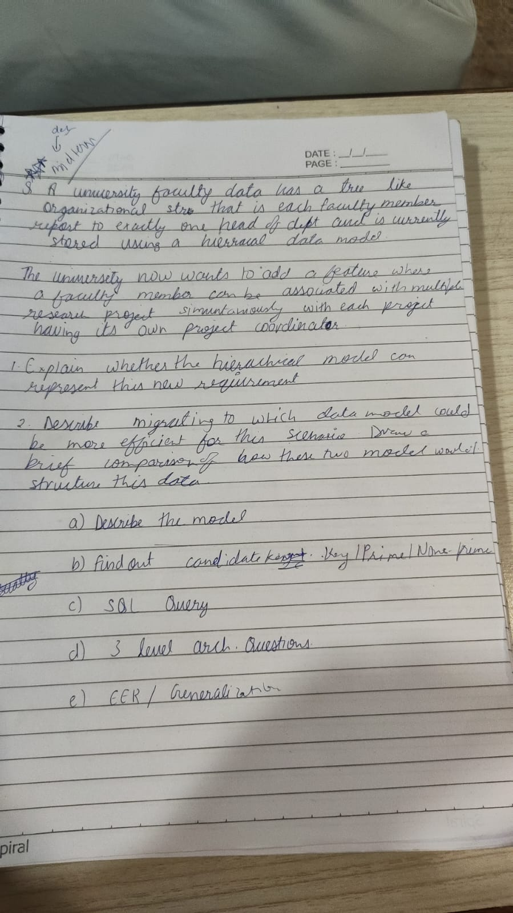

Database Management Systems (DBMS)
Curated Exam Repository • Segregations 1 to 3 • sec-e-images Notes & Solved •
OCR Bifurcation • Specialized ;short-revision; • Interactive Workbench
87 QB Questions
100% Solved with Rubrics
sec-e-images
5 Sheets Transcribed & Solved
OCR Bifurcated
Lecture Image Note & Q/A
;short-revision;
7 Master Modules & Tables
⚡ Specialized High-Yield: Quick-Revision Master Core
7 Essential ModulesRapid revision blueprints synthesized for high-yield university exam prep. Formatted with side-by-side comparative matrices, mathematical functional dependency derivations, and SQL implementation patterns.
📐 1. Database Normalisation & Anomalies
Normalisation is the systematic decomposition of relations to minimize data redundancy and eradicate insertion, deletion, and update anomalies while guaranteeing lossless joins.
- Insertion Anomaly: Inability to insert information about an entity without artificially fabricating attributes of an unrelated entity (e.g., cannot record a new Department until an Employee is hired).
- Deletion Anomaly: Deleting one fact inadvertently causes the unintended total loss of an unrelated fact (e.g., deleting the sole employee in a department deletes the department record).
- Update / Modification Anomaly: Changing data stored redundantly in multiple rows requires multiple updates; updating only a subset results in data inconsistency.
- 1NF: All domain attributes must be atomic. No repeating groups, arrays, or comma-separated multivalues.
- 2NF: Must be in 1NF + No Partial Dependencies. Every non-prime attribute must depend on the entire candidate key, not a proper subset of a composite key.
- 3NF: Must be in 2NF + No Transitive Dependencies. For all functional dependencies $X \to Y$, either $X$ is a superkey OR $Y$ is a prime attribute.
- BCNF: Strictly stronger than 3NF. For every non-trivial dependency $X \to Y$, $X$ must be a superkey.
A decomposition of $R$ into $R_1, R_2$ is:
- Lossless Join: Guaranteed if and only if the common attributes form a superkey of at least one relation: $R_1 \cap R_2 \to R_1$ or $R_1 \cap R_2 \to R_2$.
- Dependency Preserving: Guaranteed if $(F_1 \cup F_2)^+ = F^+$. 3NF decomposition always achieves both; BCNF guarantees lossless joins but may sacrifice dependency preservation.
💎 2. Boyce-Codd Normal Form (BCNF)
BCNF eliminates anomalies where a prime attribute is determined by a non-superkey. While 3NF permits $X \to Y$ if $Y$ is prime, BCNF strictly disallows any non-superkey determinant.
| Aspect | 3NF Rule | BCNF Rule |
|---|---|---|
| Condition on $X \to Y$ | $X$ is Superkey OR $Y$ is Prime attribute | $X$ MUST be a Superkey |
| Prime RHS Allowed? | Yes (relaxing condition) | Strictly No (never permitted) |
| Dependency Preservation | Always achievable | May be lost during decomposition |
Relation: $R(\text{Student}, \text{Subject}, \text{Tutor})$ with FDs:
- $FD_1: (\text{Student}, \text{Subject}) \to \text{Tutor}$
- $FD_2: \text{Tutor} \to \text{Subject}$ (Each tutor teaches only one subject)
Candidate Keys: $\{\text{Student}, \text{Subject}\}$ and $\{\text{Student},
\text{Tutor}\}$.
Prime Attributes: $\text{Student}, \text{Subject}, \text{Tutor}$ (All are prime!).
Analysis: In $FD_2$, $\text{Tutor}$ is not a superkey, but $\text{Subject}$ is
a prime attribute. Thus, $R$ is in 3NF.
However, $\text{Tutor}$ is not a superkey $\implies$ Violates BCNF!
Decompose $R$ based on violating $FD_2: \text{Tutor} \to \text{Subject}$:
- $R_1(\underline{\text{Tutor}}, \text{Subject})$ with key $\text{Tutor}$ (In BCNF).
- $R_2(\underline{\text{Student}, \text{Tutor}})$ with key $(\text{Student}, \text{Tutor})$ (In BCNF).
$R_1 \cap R_2 = \{\text{Tutor}\}$ which is PK of $R_1$ $\implies$ Lossless Join.
However, $FD_1: (\text{Student}, \text{Subject}) \to \text{Tutor}$ spans both tables and cannot be
verified without a join $\implies$ Dependency Preservation is Lost.
📊 3. High-Yield Comparative Matrices (Table-Form Analysis)
Structured tabular comparisons contrasting core database paradigms, storage mechanics, and normal form boundaries.
| Feature / Dimension | Traditional File Processing System | Database Management System (DBMS) |
|---|---|---|
| Data Redundancy | High. Multiple application programs store isolated, duplicate copies of identical facts. | Minimal. Centralized schema ensures single-point storage with controlled redundancy. |
| Data Consistency | Low. Modifying data in one file leaves stale copies elsewhere, creating update anomalies. | Guaranteed. Updates propagate centrally, enforcing relational constraints across all views. |
| Data Independence | None. Tight coupling between file record structures and application code (file changes break apps). | High. Two-tier data independence: Physical (Internal/Conceptual) and Logical (Conceptual/External). |
| Concurrent Access | Rudimentary file-locking. High risk of lost updates, dirty reads, and race conditions. | Sophisticated concurrency control using Two-Phase Locking (2PL), isolation levels, and serializability. |
| Crash Recovery | Manual rollback or permanent loss. No integrated write-ahead logging. | Automated ACID durability via Write-Ahead Logging (WAL) and checkpoint rebalancing. |
| Security & Views | OS file permissions (read/write/execute). Cannot restrict column or row-level access easily. | Fine-grained role-based access control (RBAC), row/column views, and dynamic authorization. |
| Normal Form | Governing Invariant | Primary Anomaly Eliminated | Key Requirement | Preservation Guarantee |
|---|---|---|---|---|
| 1NF | Attribute values must be atomic; no multi-valued attributes or repeating groups. | Storage format inconsistency & non-relational set attributes. | Primary key defined. | Always preserved. |
| 2NF | In 1NF + No partial functional dependencies on proper subsets of candidate keys. | Redundancy when candidate key is composite. | Full functional dependency on composite key. | Lossless & Dependency-preserving. |
| 3NF | In 2NF + For all $X \to Y$, $X$ is a superkey OR $Y$ is a prime attribute (no transitive FDs). | Transitive dependency redundancy & update cascades. | Determinants are superkeys OR dependents are prime. | Always Lossless & Dependency-preserving. |
| BCNF | In 1NF + For all non-trivial $X \to Y$, $X$ MUST be a superkey. | All functional-dependency related redundancy & anomalies. | Every determinant is strictly a superkey. | Always Lossless; may lose dependency preservation. |
| Criteria | Star Schema | Snowflake Schema |
|---|---|---|
| Dimension Normalization | Denormalized. Dimension tables contain redundant hierarchical fields (e.g. City, State, Country). | Normalized. Dimensions split into sub-dimension tables (e.g. Store $\to$ City $\to$ State $\to$ Country). |
| Join Complexity | Low. Simple 1-level star joins between central Fact table and surrounding Dimensions. | High. Multi-level snowflake joins across normalized dimension hierarchies. |
| Query Performance | Fast. Optimized for rapid OLAP aggregation and decision support queries. | Slower due to overhead of traversing deep relational foreign-key join trees. |
| Storage Footprint | Higher due to controlled dimensional attribute redundancy. | Lower. Strict 3NF normalization eliminates dimensional duplication. |
| ETL & Maintenance | Simpler ETL data ingestion pipeline; higher update maintenance overhead. | Complex ETL pipelines; updates to dimensional attributes occur in single normalized rows. |
| Attribute | DELETE | TRUNCATE | DROP |
|---|---|---|---|
| Command Category | DML (Data Manipulation Language) | DDL (Data Definition Language) | DDL (Data Definition Language) |
| Scope of Removal | Removes selected rows matching `WHERE` condition (or all rows if omitted). | Deallocates all data pages; removes all rows unconditionally. | Destroys the entire table schema, all data, triggers, and constraints. |
| Transactional Rollback | Fully rollbackable. Every row deletion is logged in redo/undo logs. | Rollbackable in transaction blocks (PostgreSQL/SQL Server) via page deallocation logs. | Rollbackable only inside DDL-supporting transactions (DBMS-dependent). |
| Execution Speed | Slow. Row-by-row scanning, firing row-level triggers and maintaining indexes. | Very fast. Deallocates data pages in memory without row-by-row overhead. | Immediate. Releases catalog metadata and physical storage. |
| Table Schema Retained? | Yes. Empty table structure, indexes, and constraints remain intact. | Yes. Table definition, constraints, and indexes remain ready for new data. | No. Table structure is purged completely from data dictionary. |
| Feature | Clustered Index | Non-Clustered Index |
|---|---|---|
| Physical Order | Dictates the physical sequential storage order of table rows on disk. | Independent. Physical data rows remain stored in arbitrary heap or clustered order. |
| Count per Table | Exactly one per table (data can only be physically sorted one way). | Multiple (typically up to 999 or DBMS limit) per table. |
| Leaf Node Content | Contains the actual physical table data rows (leaf = data page). | Contains index key values and row pointers (clustering key or tuple RID). |
| Performance Best Fit | High performance for range scans (`BETWEEN`, `>`, `<`) and primary key lookups. | Best for point lookups on secondary columns (`WHERE Email = ...`) and foreign keys. |
| Dimension | Specialization | Generalization |
|---|---|---|
| Approach | Top-down conceptual design approach. | Bottom-up conceptual synthesis approach. |
| Mechanism | Splits a generic superclass entity into specialized sub-entity subclasses based on distinguishing traits. | Synthesizes multiple entity sets with common attributes into a generalized higher-level superclass. |
| Example | $\text{EMPLOYEE} \implies \text{HOURLY\_EMP}, \text{SALARIED\_EMP}$. | $\text{CAR}, \text{TRUCK}, \text{MOTORCYCLE} \implies \text{VEHICLE}$. |
| Inheritance | Subclasses inherit all attributes and relationships of the superclass plus specific ones. | Common attributes are extracted to the generalized superclass to reduce redundancy. |
| Property | Hierarchical Model (1960s) | Network Model (CODASYL, 1970s) | Relational Model (Codd, 1970) |
|---|---|---|---|
| Data Structure | Tree structure (Root, Parent-Child segments). | Directed Graph (Owner-Member sets). | Two-dimensional Relations (Tables with tuples/attributes). |
| Relationship Cardinality | Strict $1:1$ and $1:N$. Cannot natively represent $M:N$. | Supports $1:1, 1:N$ and $M:N$ via junction/link records. | Fully supports $1:1, 1:N,$ and $M:N$ via primary/foreign key pairs. |
| Record Linkage | Hardwired physical pointer chains. | Circular linked pointer arrays (Set constructs). | Logical value-based references (Foreign keys). No exposed pointers. |
| Query Mechanism | Procedural navigational traversal from root. | Procedural navigation across owner-member sets. | Non-procedural declarative query language (SQL / Relational Algebra). |
🔑 4. Functional Dependencies, Keys & Attributes
Rigorous formal definitions of dependencies, Armstrong's axioms, key closures, and attribute classification.
For any two tuples $t_1, t_2 \in r(R)$, if $t_1[X] = t_2[X]$, then $t_1[Y] = t_2[Y]$.
Trivial Dependency: $X \to Y$ where $Y \subseteq X$.
Non-Trivial: $X \to Y$ where $Y \not\subseteq X$.
- Reflexivity: If $Y \subseteq X$, then $X \to Y$.
- Augmentation: If $X \to Y$, then $XZ \to YZ$ for any $Z$.
- Transitivity: If $X \to Y$ and $Y \to Z$, then $X \to Z$.
- Union (Derived): If $X \to Y$ and $X \to Z$, then $X \to YZ$.
- Decomposition (Derived): If $X \to YZ$, then $X \to Y$ and $X \to Z$.
- Pseudotransitivity (Derived): If $X \to Y$ and $WY \to Z$, then $WX \to Z$.
- Super Key (SK): Any set of attributes $K$ whose closure contains all attributes of the relation: $K^+ = R$.
- Candidate Key (CK): A minimal super key. $K^+ = R$ and no proper subset $K' \subset K$ satisfies $(K')^+ = R$.
- Primary Key (PK): The candidate key selected by the database architect to uniquely identify tuples (enforces `NOT NULL` and `UNIQUE`).
- Alternate Key (AK): Any candidate key not selected as the primary key.
- Prime Attribute: An attribute that is a member of at least one candidate key.
- Non-Prime Attribute: An attribute that does not appear in any candidate key.
- Step 1 (Decomposition): Rewrite all FDs such that the right-hand side has exactly one attribute ($X \to Y_1 Y_2 \implies X \to Y_1, X \to Y_2$).
- Step 2 (Extraneous LHS attributes): For each $X \to A$, if $B \in X$ can be removed such that $(X - \{B\})^+ \supseteq A$, replace $X \to A$ with $(X - \{B\}) \to A$.
- Step 3 (Redundant FDs): Remove any FD $X \to A$ if $A \in X^+$ computed using $F - \{X \to A\}$.
🏛️ 5. Database Architecture & Data Models
Foundations of conceptual data modeling, entity-relationship structures, and dimensional warehousing.
- Entity: Rectangle (Strong entity), Double Rectangle (Weak entity dependent on identifying owner).
- Relationship: Diamond (Regular), Double Diamond (Identifying relationship for weak entities).
- Attributes: Ellipse (Simple), Double Ellipse (Multivalued e.g. Phone numbers), Dashed Ellipse (Derived e.g. Age from DOB), Underlined (Key attribute), Dashed Underline (Partial key / discriminator of weak entity).
- Participation: Double Line (Total participation / existence dependency), Single Line (Partial participation).
- Disjointness Constraint: Disjoint ($d$) specifies that an entity can belong to at most one subclass. Overlapping ($o$) specifies an entity may belong to multiple subclasses simultaneously.
- Completeness Constraint: Total specialization (double line) specifies every superclass entity must belong to a subclass. Partial (single line) allows a superclass entity to belong to none.
- Aggregation: Modeling a relationship as an abstract higher-level entity set so it can participate in subsequent relationships with other entities (e.g. `(Employee works_on Project) sponsored_by Department`).
- Fact Table: Contains numerical business measurements (metrics) and foreign keys referencing dimension tables (e.g., `Sales_Fact(Sale_ID, Prod_ID, Cust_ID, Time_ID, Units_Sold, Total_Revenue)`).
- Dimension Tables: Contain descriptive contextual attributes for filtering and grouping (e.g., `Product_Dim`, `Customer_Dim`, `Time_Dim`).
🏛️ 6. Unit 1 Theoretical Foundations
Three-level architecture, program-data independence, and core operational characteristics of enterprise DBMS.
- Self-Describing Nature: A DBMS stores its own schema, catalog, and metadata in a centralized system catalog (data dictionary).
- Insulation between Programs and Data: Data structures are decoupled from application software, permitting schema modifications without code recompilation.
- Support for Multiple Views: Enables distinct customized perspectives of the data for different user classes without data duplication.
- Multiuser Transaction Processing: Concurrency control and recovery mechanisms ensure strict ACID properties across concurrent workloads.
- 1. External Level (View Schema): Individual user views describing only the subset of data relevant to specific end-users or application roles.
- 2. Conceptual Level (Logical Schema): Global community logical representation of the entire database structure, entities, relationships, and integrity constraints.
- 3. Internal Level (Physical Schema): Low-level physical storage representation on disk, record layouts, block allocations, B+ tree indexes, and compression.
- Physical Data Independence: The capacity to modify the internal physical schema (e.g., migrating tables from HDD to NVMe SSD, adding B+ tree indexes) without requiring changes to the conceptual schema. Handled by the Conceptual/Internal Mapping.
- Logical Data Independence: The capacity to alter the conceptual schema (e.g., adding an `Email` column, expanding tables) without modifying external views or application code. Handled by the External/Conceptual Mapping. Harder to achieve because applications are tightly bound to logical entity attributes.
💻 7. Comprehensive SQL Master Guide & Syntax Patterns
Production-standard SQL query blueprints covering table definitions, constraint cascades, join patterns, subqueries, and analytic window functions.
-- Comprehensive Table Creation with All Constraints
CREATE TABLE Department (
dept_id VARCHAR(10) PRIMARY KEY,
dept_name VARCHAR(100) NOT NULL UNIQUE
);
CREATE TABLE Employee (
emp_id INT PRIMARY KEY,
emp_name VARCHAR(100) NOT NULL,
salary DECIMAL(10, 2) CHECK (salary > 0),
age INT CHECK (age >= 18),
dept_id VARCHAR(10),
CONSTRAINT fk_dept FOREIGN KEY (dept_id)
REFERENCES Department(dept_id)
ON DELETE SET NULL
ON UPDATE CASCADE
);
-- Adding columns & indexes
ALTER TABLE Employee ADD COLUMN phone_no VARCHAR(15);
CREATE INDEX idx_emp_salary ON Employee(salary);-- INNER JOIN vs LEFT OUTER JOIN
SELECT e.emp_name, d.dept_name
FROM Employee e
INNER JOIN Department d ON e.dept_id = d.dept_id;
-- Left Join capturing departments even without assigned employees
SELECT d.dept_name, COUNT(e.emp_id) AS total_employees
FROM Department d
LEFT JOIN Employee e ON d.dept_id = e.dept_id
GROUP BY d.dept_name;
-- Set Operations: UNION (Deduplicated) vs UNION ALL (Retains Duplicates)
SELECT roll_no, name FROM ug_students
UNION ALL
SELECT roll_no, name FROM pg_students;-- Group By & HAVING: High-earning departments with avg salary > 60,000
SELECT dept_id, AVG(salary) AS avg_sal, COUNT(*) AS emp_count
FROM Employee
GROUP BY dept_id
HAVING AVG(salary) > 60000;
-- Correlated Subquery: Employees earning more than their own department's average
SELECT emp_name, salary, dept_id
FROM Employee e
WHERE salary > (
SELECT AVG(salary)
FROM Employee
WHERE dept_id = e.dept_id
);
-- Analytic Window Functions: Department-wise Salary Ranking
SELECT emp_name, dept_id, salary,
ROW_NUMBER() OVER (PARTITION BY dept_id ORDER BY salary DESC) AS row_num,
RANK() OVER (PARTITION BY dept_id ORDER BY salary DESC) AS sal_rank,
DENSE_RANK() OVER (PARTITION BY dept_id ORDER BY salary DESC) AS dense_sal_rank
FROM Employee;Section: sec-e-images • Verified Classroom Problem Solving
Direct optical inspection, verbatim transcriptions, and exhaustive exam-grade problem solving for the 5
handwritten lecture and drill sheets from assets/sec-e-images/. Click any image to view in the
high-resolution lightbox.
Sheet 1: Online Shopping 3-Level Architecture & R(P, Q, R, S, T, U) Candidate Keys

Q1. An online shopping applications displays only the product name, price, & availability to customers. Customers do not need to know about how product records are stored in files, blocks or storage devices.
1) Identify the appropriate level of 3 level of DBMS of arch. involved.
2) Describe the mapping b/w levels helps hide storage from the user.
Q2. R(P, Q, R, S, T, U) [Starred]
FDs: P → Q, QR → S, S → T, PU → R, T → U
* Determine all candidate key
1) Determine whether {P, U}, {P, Q, U}, {Q, R}, {S, U} are super keys, candidate keys or neither.
1. Level Identification:
- External Level (View Level): This is the level involved with the customer.
End-users see tailored, simplified views exposing only required business fields
(
product_name,price,availability) while suppressing internal storage mechanics. - Internal Level (Physical Level): Responsible for physical storage details—specifying block allocations, B+ tree indexing structures, compression, and file formats on hardware drives.
- Conceptual Level (Logical Level): Defines all entities, relationships, attributes, and constraints across the enterprise database without implementation detail.
2. Role of Mapping in Hiding Storage (Physical Data Independence):
The DBMS maintains two layers of mapping: External-to-Conceptual Mapping and Conceptual-to-Internal Mapping. The Conceptual-to-Internal mapping explicitly translates logical entities into physical block records. When the DBA migrates storage (e.g., changes file clustering or updates SSD indexing), only this conceptual-to-internal mapping is adjusted by the DBMS engine. The conceptual schema and external views remain untouched, providing Physical Data Independence.
Given relation $R(P, Q, R, S, T, U)$ and $F = \{P \to Q,\; QR \to S,\; S \to T,\; PU \to R,\; T \to U\}$.
Step 1: Essential Attribute Check:
Look at the RHS of dependencies: $Q, S, T, R, U$. Attribute $P$ never appears on the
right-hand side of any dependency. Hence, $P$ must be part of every candidate key of
$R$.
Step 2: Candidate Key Discovery:
- $\{P\}^+ = \{P, Q\} \neq R$. Need additional attributes.
- $\{P, U\}^+$: $$\{P, U\} \xrightarrow{P \to Q} \{P, Q, U\} \xrightarrow{PU \to R} \{P, Q, R, U\} \xrightarrow{QR \to S} \{P, Q, R, S, U\} \xrightarrow{S \to T} \{P, Q, R, S, T, U\} = R$$ Proper subsets: $\{P\}^+ = \{P, Q\} \neq R$, $\{U\}^+ = \{U\} \neq R$. Hence, $\mathbf{\{P, U\}}$ is a Candidate Key.
- Can we substitute $U$? We have $T \to U$: $$\{P, T\}^+ = \{P, T, U, Q, R, S\} = R$$ Proper subsets do not determine $R$. Hence, $\mathbf{\{P, T\}}$ is a Candidate Key.
- Can we substitute $T$? We have $S \to T$: $$\{P, S\}^+ = \{P, S, T, U, Q, R\} = R$$ Proper subsets do not determine $R$. Hence, $\mathbf{\{P, S\}}$ is a Candidate Key.
- Can we substitute $S$? We have $QR \to S$. Since $P \to Q$, $\{P, R\}$ provides $QR$: $$\{P, R\}^+ = \{P, Q, R, S, T, U\} = R$$ Proper subsets do not determine $R$. Hence, $\mathbf{\{P, R\}}$ is a Candidate Key.
All Candidate Keys of R: $\mathbf{\{P, U\}}$, $\mathbf{\{P, T\}}$, $\mathbf{\{P, S\}}$, $\mathbf{\{P, R\}}$.
Step 3: Classification of Given Sets:
| Attribute Set | Closure $X^+$ | Classification | Justification |
|---|---|---|---|
| $\{P, U\}$ | $R$ | Candidate Key | Uniquely determines $R$ and is minimal (no proper subset determines $R$). |
| $\{P, Q, U\}$ | $R$ | Super Key (only) | Determines $R$, but is not minimal because proper subset $\{P, U\}$ is a CK. |
| $\{Q, R\}$ | $\{Q, R, S, T, U\} \neq R$ | Neither | Fails to determine attribute $P$. Cannot span entire relation. |
| $\{S, U\}$ | $\{S, T, U\} \neq R$ | Neither | Fails to determine attributes $P, Q, R$. |
Sheet 2: Prime vs Non-Prime Attributes & Student-Course-Result SQL Suite

Q. Student(stud_id, S_Name, Branch, Semester)
Course(C_id, C_Name, Credits)
Result(Stu_id, C_id, Marks)
10 marks
write SQL Queries:
1) Name of students whose marks > 75
2) Display the avg marks for each course
3) Display student name along with course name using inner join
4) Display only those courses whose avg marks > 65
5) Create an Index on stu_id of result table
From Sheet 1, the Candidate Keys of $R$ are: $\{P, U\}$, $\{P, T\}$, $\{P, S\}$, $\{P, R\}$.
- Prime Attributes (attributes appearing in at least one Candidate Key): $$\text{Prime} = \{P, U\} \cup \{P, T\} \cup \{P, S\} \cup \{P, R\} = \mathbf{\{P, R, S, T, U\}}$$
- Non-Prime Attributes (attributes belonging to no Candidate Key): $$\text{Non-Prime} = R - \text{Prime} = \mathbf{\{Q\}}$$
-- 1. Names of students whose marks > 75
SELECT DISTINCT s.S_Name
FROM Student s
INNER JOIN Result r ON s.stud_id = r.Stu_id
WHERE r.Marks > 75;
-- 2. Display the average marks for each course
SELECT c.C_id, c.C_Name, AVG(r.Marks) AS Avg_Marks
FROM Course c
INNER JOIN Result r ON c.C_id = r.C_id
GROUP BY c.C_id, c.C_Name;
-- 3. Display student name along with course name using INNER JOIN
SELECT s.S_Name, c.C_Name, r.Marks
FROM Student s
INNER JOIN Result r ON s.stud_id = r.Stu_id
INNER JOIN Course c ON r.C_id = c.C_id;
-- 4. Display only those courses whose average marks > 65
SELECT c.C_id, c.C_Name, AVG(r.Marks) AS Avg_Marks
FROM Course c
INNER JOIN Result r ON c.C_id = r.C_id
GROUP BY c.C_id, c.C_Name
HAVING AVG(r.Marks) > 65;
-- 5. Create an index on stu_id of Result table
CREATE INDEX idx_result_stuid ON Result(Stu_id);Sheet 3: Library Management EER Diagram (Specialization, Borrowing & Schema)

a) A library member may be either student or faculty member
b) every student member must belong to department
c) A member can borrow multiple books
d) A book can be borrowed by diff members over time
Attributes:
Student: Id, Name, Department
Faculty: Member name, Designation, Id
Book: Id, Title, Author, Price
Draw EER:
Generalisation, Specialisation, Cardinality
- Superclass:
LIBRARY_MEMBERwith common attributes:Member_ID (PK),Name,Join_Date. - Subclasses:
STUDENT_MEMBERandFACULTY_MEMBER. - Specialization Constraint: Disjoint ($d$), Total Participation ($=$) (Every member in the library must be registered either as a student or a faculty member; cannot be both simultaneously under typical institutional library policies).
- Subclass Specific Attributes:
•STUDENT_MEMBER:Department(mandatory total participation in Department).
•FACULTY_MEMBER:Designation,Office_Cabin. - Borrowing Relationship:
BORROWSrelationship betweenLIBRARY_MEMBERandBOOK.
• Cardinality: $M : N$ (One member borrows $0 \dots N$ books; One book can be borrowed by $0 \dots M$ distinct members over time).
• Relationship Attributes:Issue_Date,Due_Date,Return_Date,Fine_Amount.
-- Superclass Member Table
CREATE TABLE LIBRARY_MEMBER (
Member_ID INT PRIMARY KEY,
Name VARCHAR(100) NOT NULL,
Member_Type VARCHAR(20) CHECK (Member_Type IN ('STUDENT', 'FACULTY'))
);
-- Subclass Tables inheriting PK as FK
CREATE TABLE STUDENT_MEMBER (
Member_ID INT PRIMARY KEY REFERENCES LIBRARY_MEMBER(Member_ID) ON DELETE CASCADE,
Department VARCHAR(50) NOT NULL
);
CREATE TABLE FACULTY_MEMBER (
Member_ID INT PRIMARY KEY REFERENCES LIBRARY_MEMBER(Member_ID) ON DELETE CASCADE,
Designation VARCHAR(50) NOT NULL
);
-- Book Entity Table
CREATE TABLE BOOK (
Book_ID INT PRIMARY KEY,
Title VARCHAR(150) NOT NULL,
Author VARCHAR(100),
Price DECIMAL(8, 2) CHECK (Price >= 0)
);
-- Junction Table for M:N Borrowing Relationship
CREATE TABLE BORROW_RECORD (
Borrow_ID INT PRIMARY KEY,
Member_ID INT NOT NULL,
Book_ID INT NOT NULL,
Issue_Date DATE NOT NULL,
Return_Date DATE,
FOREIGN KEY (Member_ID) REFERENCES LIBRARY_MEMBER(Member_ID),
FOREIGN KEY (Book_ID) REFERENCES BOOK(Book_ID)
);Sheet 4: Customer & Orders Relational Aggregations & Subquery Analytics

Order: order_id, customer_id, [Amount, Order_date]
(1) Display the customer whose total order amount exceeds 1,00,000
(2) Display the customer having max. total order amount
(3) Display city wise no. of customer
(4) Display the order whose amount is greater than avg. order amount
SELECT c.customer_id, c.customer_name, SUM(o.Amount) AS Total_Spent
FROM Customer c
INNER JOIN Orders o ON c.customer_id = o.customer_id
GROUP BY c.customer_id, c.customer_name
HAVING SUM(o.Amount) > 100000;-- Standard SQL using Subquery with ALL:
SELECT c.customer_id, c.customer_name, SUM(o.Amount) AS Max_Spent
FROM Customer c
INNER JOIN Orders o ON c.customer_id = o.customer_id
GROUP BY c.customer_id, c.customer_name
HAVING SUM(o.Amount) >= ALL (
SELECT SUM(Amount)
FROM Orders
GROUP BY customer_id
);
-- Alternative using ORDER BY and LIMIT (or TOP 1 in SQL Server):
SELECT c.customer_id, c.customer_name, SUM(o.Amount) AS Max_Spent
FROM Customer c
INNER JOIN Orders o ON c.customer_id = o.customer_id
GROUP BY c.customer_id, c.customer_name
ORDER BY Max_Spent DESC
LIMIT 1;SELECT customer_city, COUNT(customer_id) AS Total_Customers
FROM Customer
GROUP BY customer_city
ORDER BY Total_Customers DESC, customer_city ASC;SELECT order_id, customer_id, Amount
FROM Orders
WHERE Amount > (
SELECT AVG(Amount)
FROM Orders
)
ORDER BY Amount DESC;Sheet 5: Master Lecture Blueprint: Normalization (BCNF), Self-Query & Indexing
Normalization (BCNF), Functional Dependency, Models
Theory of DBMS introduction, Query (Join inklonis, self query)
Indexing
A Self-Join joins a table to itself by creating two distinct aliases (e.g. employee
and manager from the same EMPLOYEE table):
-- Find employees who earn more than their direct manager
SELECT e.Emp_Name AS Employee_Name, e.Salary AS Emp_Salary,
m.Emp_Name AS Manager_Name, m.Salary AS Manager_Salary
FROM EMPLOYEE e
INNER JOIN EMPLOYEE m ON e.Manager_ID = m.Emp_ID
WHERE e.Salary > m.Salary;
-- Find employees working in the same department (pairs)
SELECT e1.Emp_Name AS Emp1, e2.Emp_Name AS Emp2, e1.Department
FROM EMPLOYEE e1
INNER JOIN EMPLOYEE e2
ON e1.Department = e2.Department
AND e1.Emp_ID < e2.Emp_ID;A relation $R$ is in Boyce-Codd Normal Form (BCNF) if for every non-trivial functional dependency $X \to Y$:
$$\mathbf{X \text{ must be a Super Key of } R}$$Unlike 3NF, BCNF does not allow the loophole where $Y$ is a prime attribute. If an attribute determinant is not a superkey, the table must be decomposed into $R_1(X, Y)$ and $R_2(R - Y \cup X)$.
| Aspect | Clustered Index | Non-Clustered (Secondary) Index |
|---|---|---|
| Physical File Order | Dictates the physical order of data rows on disk. | Physical data rows remain in heap or clustered order. |
| Number per Table | Maximum 1 per table. | Multiple (typically up to 999 depending on RDBMS). |
| Leaf Node Content | Stores the actual data pages. | Stores index key values and row locator pointers (RID / PK). |
📸 Handwritten Classroom Notes & Whiteboard Inspection
assets/image.pngDirect high-resolution optical inspection and verified transcription of teacher classroom notes, whiteboard problem formulations, and prioritized mid-term examination focus areas.

8. A university faculty data has a tree like organizational str. that is each faculty member report to exactly one head of dept and is currently stored using a hierarchical data model.
The university now wants to add a feature where a faculty member can be associated with multiple research projects simultaneously with each project having its own project coordinator.
1. Explain whether the hierarchical model can represent this new requirement.
2. Describe migrating to which data model could be more efficient for this scenario. Draw a brief comparison of how these two model would structure this data.
a) Describe the model
b) Find out candidate key / Prime / None-prime
c) SQL Query
d) 3 level arch. Questions
e) EER / Generalization
Q8 Model Answer: Hierarchical Tree Architecture vs Multi-Project Research Association
The Hierarchical Data Model organizes records strictly in an inverted tree hierarchy where:
- Every child record segment has exactly one parent segment (single-parent invariant).
- Relationships are strictly $1:1$ or $1:N$.
Can it represent the new requirement natively?
No, not without severe data redundancy and anomalies. Associating a faculty member
with multiple research projects creates an $M:N$ (many-to-many) relationship (a faculty member
participates in multiple projects, and a project involves multiple faculty members under a
coordinator). In a hierarchical model, to link one faculty member to three projects, the entire
faculty record segment must be duplicated under each project node (or vice-versa), causing
massive data duplication, update inconsistencies, and deletion anomalies.
Recommended Target Model: The Relational Data Model (or alternatively, the Network Data Model).
- Relational Model Advantage: Seamlessly resolves $M:N$ relationships into two $1:N$ relationships using a junction table (`FACULTY_PROJECT`), preserving single-record storage and zero redundancy.
- Declarative Querying: Allows dynamic SQL queries for project coordinators without requiring navigational pointer traversal.
| Dimension | Hierarchical Representation | Relational Migration Representation |
|---|---|---|
| Schema Architecture | Tree hierarchy: `Department` (Root) $\to$ `Faculty` (Child) $\to$ duplicated `Project` nodes. | Normalized relations: `DEPARTMENT`, `FACULTY`, `PROJECT`, and junction `FACULTY_PROJECT`. |
| Foreign Associations | Hardcoded physical pointer links; cannot cross tree branches without duplication. | Logical value-based foreign key linkages (`Faculty_ID`, `Project_ID`). |
| Data Redundancy | High. Faculty data or Project data duplicated across multiple tree branches. | Zero. Every faculty member and project exists in exactly one normalized tuple. |
| Integrity Enforcement | Manual application pointer tracking. | Automated declarative foreign key integrity (`ON DELETE CASCADE / SET NULL`). |
-- Resulting Normalized Relational Schemas
DEPARTMENT (Dept_ID PK, Dept_Name, HOD_ID)
FACULTY (Faculty_ID PK, Name, Dept_ID FK, Rank, Experience)
PROJECT (Project_ID PK, Title, Coordinator_ID FK REFERENCES FACULTY(Faculty_ID), Budget)
FACULTY_PROJECT (Faculty_ID FK, Project_ID FK, Role, Hours_Allocated,
PRIMARY KEY (Faculty_ID, Project_ID))Segregation 1: Teacher Suggested Core Exam Problems & Practice Drill
Comprehensive coverage of all teacher-recommended topics from the syllabus and class lectures (16 fully solved exam cards). Features Part 1: High-Yield Core Topic Formulations (Lines 3–11) and Part 2: University Practice Paper Drill (Lines 16–73).
Part 1: Teacher's Explicit High-Yield Core Topics (8 Questions)
Specific topic formulations prescribed in lines 3–11 of questions.txt: City-wise ASC/DESC
queries, Hierarchical vs Network, Candidate keys, Inner join, Salary > 50,000, Indexing, Hospital EER, and
DDL/DML/DCL differentiation.
Topic 1. SQL Queries Master: Multi-Level City Sorting (ASC/DESC) & Aggregates
1. SQL Queries (10 marks) • City-wise queries using ASC and DESC:
Consider a retail database with tables: CUSTOMER(Cust_ID, Cust_Name, City, Registration_Date) and
ORDERS(Order_ID, Cust_ID, Order_Date, Total_Amount).
Write SQL queries for the following requirements:
1. Display customer name, city, and total order amount for each order, sorted by City in ascending order
(ASC), and within the same city by Total_Amount in descending order (DESC).
2. Display each city along with the total number of orders placed and the cumulative sales amount,
sorted by cumulative sales in descending order.
3. Display only those cities that have generated total sales exceeding ₹2,50,000, ordered alphabetically
by city name (ASC).
4. Write a query to find the highest single order placed in each city.
SELECT c.Cust_Name, c.City, o.Order_ID, o.Total_Amount
FROM CUSTOMER c
INNER JOIN ORDERS o ON c.Cust_ID = o.Cust_ID
ORDER BY c.City ASC, o.Total_Amount DESC;Execution Logic: The query performs an inner equijoin on Cust_ID. Rows are
primarily clustered by c.City alphabetically ($A o Z$). Within identical city groups,
records are arranged by o.Total_Amount in descending magnitude.
SELECT c.City,
COUNT(o.Order_ID) AS Total_Orders,
SUM(o.Total_Amount) AS Cumulative_Sales
FROM CUSTOMER c
INNER JOIN ORDERS o ON c.Cust_ID = o.Cust_ID
GROUP BY c.City
ORDER BY Cumulative_Sales DESC;SELECT c.City, SUM(o.Total_Amount) AS Total_Revenue
FROM CUSTOMER c
INNER JOIN ORDERS o ON c.Cust_ID = o.Cust_ID
GROUP BY c.City
HAVING SUM(o.Total_Amount) > 250000
ORDER BY c.City ASC;Note: WHERE cannot filter on aggregated values (e.g. SUM);
filtering grouped groups must be performed using the HAVING clause prior to
ORDER BY.
WITH RankedOrders AS (
SELECT c.City, c.Cust_Name, o.Order_ID, o.Total_Amount,
ROW_NUMBER() OVER (PARTITION BY c.City ORDER BY o.Total_Amount DESC) AS rnk
FROM CUSTOMER c
INNER JOIN ORDERS o ON c.Cust_ID = o.Cust_ID
)
SELECT City, Cust_Name, Order_ID, Total_Amount
FROM RankedOrders
WHERE rnk = 1
ORDER BY City ASC;Topic 2. Hierarchical vs Network Data Models: Graph Topology & M:N Sets
2. Hierarchical and Network Data Models:
Compare the Hierarchical and Network data models in detail. Discuss:
1. Structural representations: Inverted tree structure vs directed graph (CODASYL) structure.
2. Handling of 1:1, 1:N, and M:N relationships between entities.
3. The parent-child relationship (PCR) vs CODASYL set types (owner-member records).
4. Data retrieval navigation and insertion/deletion anomaly risks.
| Feature | Hierarchical Data Model | Network Data Model (CODASYL DBTG) |
|---|---|---|
| Mathematical Topology | Strict inverted tree hierarchy. Root node has no parent. | Directed graph (network). Nodes can have arbitrary connections. |
| Parent-Child Rule | Every child segment can have only one parent segment. | A member record can have multiple owner records across distinct sets. |
| M:N Relationship | Cannot be natively represented. Requires artificial duplication of records or virtual pointers. | Natively supported using a composite junction record linking two owner sets. |
| Navigation Scheme | Top-down tree traversal (pre-order depth-first). Slower for cross-branch searches. | Graph pointer chains (next, prior, owner pointers). Direct access via currency indicators. |
| Deletion Anomaly | Deleting a parent node automatically deletes all subordinate child nodes (cascading loss). | A member can be preserved even if an owner is removed, provided set retention rules allow. |
In a University schema where Students enroll in multiple Courses and Courses contain multiple Students ($M:N$):
- Hierarchical Model Failure: To place a Student under multiple Courses, the entire Student record must be replicated under each Course parent. Duplicating records causes update anomalies and massive storage bloat.
- Network Model Solution: Introduces an intersection record type
ENROLLMENT.COURSEis the owner of set type $S_1$ (withENROLLMENTas member), andSTUDENTis the owner of set type $S_2$ (withENROLLMENTas member). Zero record redundancy occurs.
Topic 3. Candidate Keys, Prime & Non-Prime Attributes under Functional Dependencies
3. Candidate Key, Prime and Non-Prime Attributes under Functional Dependencies:
Explain the formal concepts of candidate keys, super keys, prime attributes, and non-prime attributes in
relational theory.
Given relation $R(A, B, C, D, E)$ with functional dependencies:
$$F = \{A \to B,\; BC \to D,\; E \to C,\; D \to A\}$$
1. Compute the closure of all singleton and composite attribute sets.
2. Determine all candidate keys of $R$.
3. Identify all prime attributes and non-prime attributes.
4. Classify the following attribute sets as super key, candidate key, or neither with justification: (a)
$\{A, E\}$, (b) $\{B, C, E\}$, (c) $\{D, E, B\}$, (d) $\{A, B, C\}$.
Examine the left-hand and right-hand sides of FDs in $F$:
- Attributes appearing on RHS: $B, D, C, A$.
- Attribute $E$ never appears on the right-hand side of any dependency. Therefore, $E$ must be part of every candidate key.
- $\{A, E\}^+$: $\{A, E\} \xrightarrow{A \to B} \{A, B, E\} \xrightarrow{E \to C}
\{A, B, C, E\} \xrightarrow{BC \to D} \{A, B, C, D, E\} = R$.
Since no proper subset of $\{A, E\}$ can determine all attributes ($\{A\}^+ = \{A, B\}$, $\{E\}^+ = \{E, C\}$), $\{A, E\}$ is a Candidate Key. - $\{D, E\}^+$: $\{D, E\} \xrightarrow{D \to A} \{A, D, E\} = \{A, E\}^+ = R$.
Since no proper subset determines $R$, $\{D, E\}$ is a Candidate Key. - $\{B, C, E\}^+$: $\{B, C, E\} \xrightarrow{BC \to D} \{B, C, D, E\}
\xrightarrow{D \to A} \{A, B, C, D, E\} = R$.
Can we remove an attribute? $\{B, E\}^+ = \{B, C, E, D, A\} = R$ (because $E \to C$, so $\{B,E\} \to \{B,C,E\}$).
Let's check $\{B, E\}^+$: $\{B, E\} \xrightarrow{E \to C} \{B, C, E\} \xrightarrow{BC \to D} \{B, C, D, E\} \xrightarrow{D \to A} R$.
Therefore, $\{B, C, E\}$ contains a proper subset $\{B, E\}$ that determines $R$. Hence, $\{B, E\}$ is a Candidate Key, and $\{B, C, E\}$ is a Super Key!
All Candidate Keys of $R$: $\mathbf{\{A, E\}}$, $\mathbf{\{D, E\}}$, $\mathbf{\{B, E\}}$.
Prime Attributes (attributes belonging to at least one candidate key):
$$\text{Prime} = \{A, E\} \cup \{D, E\} \cup \{B, E\} = \mathbf{\{A, B, D, E\}}$$Non-Prime Attributes (attributes not belonging to any candidate key):
$$\text{Non-Prime} = R - \text{Prime} = \mathbf{\{C\}}$$| Attribute Set | Closure $X^+$ | Classification | Justification |
|---|---|---|---|
| $\{A, E\}$ | $R$ | Candidate Key | Minimal super key that uniquely determines $R$. |
| $\{B, C, E\}$ | $R$ | Super Key (only) | Covers $R$, but is not minimal because proper subset $\{B, E\}$ is also a key. |
| $\{D, E, B\}$ | $R$ | Super Key (only) | Covers $R$, but contains proper subset $\{D, E\}$. |
| $\{A, B, C\}$ | $\{A, B, C, D\} \neq R$ | Neither | Missing attribute $E$; closure fails to span the entire relation $R$. |
Topic 4. Inner Join: Relational Algebra Semantics, Algorithms & NULL Handling
4. Inner Join:
Explain the relational algebra formulation and SQL implementation of an INNER JOIN.
Given tables: EMPLOYEE(Emp_ID, Emp_Name, Dept_ID, Salary) and DEPARTMENT(Dept_ID, Dept_Name,
Location).
1. Write the formal relational algebra expression for an inner join between EMPLOYEE and DEPARTMENT.
2. Write SQL statements demonstrating: (a) Explicit INNER JOIN using ON clause, (b) Natural Join, (c)
Theta Inner Join with multiple conditions.
3. Explain how the database query engine executes an inner join internally (Nested Loop vs Hash Join vs
Merge Join).
4. Illustrate what happens to an employee record having Dept_ID = NULL in an INNER JOIN
versus a LEFT OUTER JOIN.
An Inner Join (Equi-Join) between relations $R$ and $S$ on predicate $R.A = S.A$ is defined as the Cartesian product followed by a selection operation:
$$R \bowtie_{R.\text{Dept\_ID} = S.\text{Dept\_ID}} S = \sigma_{R.\text{Dept\_ID} = S.\text{Dept\_ID}}(R \times S)$$In terms of projection, duplicate joining attributes are eliminated: $\pi_{R.*, S.\text{Dept\_Name}, S.\text{Location}}(\sigma_{R.\text{Dept\_ID} = S.\text{Dept\_ID}}(R \times S))$.
-- (a) Explicit INNER JOIN with ON Clause
SELECT e.Emp_ID, e.Emp_Name, d.Dept_Name, d.Location
FROM EMPLOYEE e
INNER JOIN DEPARTMENT d ON e.Dept_ID = d.Dept_ID;
-- (b) NATURAL JOIN (Automatically matches identical column names)
SELECT Emp_ID, Emp_Name, Dept_Name, Location
FROM EMPLOYEE
NATURAL JOIN DEPARTMENT;
-- (c) Theta Inner Join with Multi-Attribute & Range Filter
SELECT e.Emp_Name, e.Salary, d.Dept_Name
FROM EMPLOYEE e
INNER JOIN DEPARTMENT d
ON e.Dept_ID = d.Dept_ID
AND e.Salary > 60000
AND d.Location = 'Bangalore';- Nested Loop Join: For each row in outer table $R$, scan inner table $S$. Best for small tables or when $S$ has an index on the join key ($O(|R| \cdot \log |S|)$).
- Hash Join: Hashes the smaller build input into an in-memory hash table on the join key, then probes rows of the larger probe input ($O(|R| + |S|)$). Ideal for large unsorted datasets.
- Sort-Merge Join: Sorts both tables on join attributes, then walks both streams in parallel ($O(|R| \log |R| + |S| \log |S|)$). Optimal when inputs are pre-sorted by clustered index.
When an employee has Dept_ID = NULL:
- INNER JOIN: Evaluates
NULL = Dept_IDwhich producesUNKNOWNin SQL three-valued logic. The employee record is completely excluded from the output. - LEFT OUTER JOIN: Preserves the left table record regardless of match. The
employee is included, and all columns from
DEPARTMENTare populated withNULL.
Topic 5. High-Salary Queries ('50000 se jyada salary'): Filtering, Grouping & Ranking
5. 50000 se jyada salary (High-Salary SQL Queries):
Consider an enterprise payroll schema: EMPLOYEE(Emp_ID, Emp_Name, Department, Salary, City,
Hire_Date).
Write comprehensive SQL queries for the following exam specifications:
1. Display the names, department, and salary of all employees whose salary exceeds ₹50,000, ordered by
Salary descending.
2. Display the department name, total count of employees, and maximum salary for all employees having
salary > 50,000, but only for departments having more than 2 such employees.
3. Display the departments where the average salary of all department employees is greater than
50,000.
4. Using an analytic window function, rank employees within each department based on salary for
employees earning over 50,000, ensuring no gaps in rank sequences (DENSE_RANK).
5. Create a high-performance index on the EMPLOYEE table to accelerate queries filtering on Salary >
50,000.
SELECT Emp_Name, Department, Salary
FROM EMPLOYEE
WHERE Salary > 50000
ORDER BY Salary DESC;SELECT Department,
COUNT(Emp_ID) AS High_Earners_Count,
MAX(Salary) AS Max_Salary
FROM EMPLOYEE
WHERE Salary > 50000
GROUP BY Department
HAVING COUNT(Emp_ID) > 2
ORDER BY High_Earners_Count DESC;Concept: WHERE Salary > 50000 filters individual rows before grouping.
HAVING COUNT(Emp_ID) > 2 filters the aggregated departmental groups after
grouping.
SELECT Department, AVG(Salary) AS Dept_Avg_Salary
FROM EMPLOYEE
GROUP BY Department
HAVING AVG(Salary) > 50000;SELECT Emp_Name, Department, Salary,
DENSE_RANK() OVER (
PARTITION BY Department
ORDER BY Salary DESC
) AS Dept_Salary_Rank
FROM EMPLOYEE
WHERE Salary > 50000;-- B+ Tree Index on Salary to allow fast B-Tree range scans
CREATE INDEX idx_emp_salary ON EMPLOYEE(Salary);
-- Composite covering index to eliminate table lookups
CREATE INDEX idx_emp_dept_salary ON EMPLOYEE(Department, Salary) INCLUDE (Emp_Name);Topic 6. Database Index Architecture: B+ Trees, Clustering & Optimization Trade-Offs
6. Index:
Explain database indexing architectures and write SQL statements for their implementation.
1. Differentiate between Primary Index, Secondary Index, Clustered Index, and Non-Clustered Index.
2. Explain the internal structure of a B+ Tree index. Why is a B+ Tree preferred over a binary search
tree or standard B-Tree for database disk storage?
3. Write SQL DDL statements to create: (a) A single-column index, (b) A composite multi-column index,
(c) A unique index.
4. Discuss scenarios where indexing accelerates query execution versus scenarios where indexing degrades
system performance.
| Index Type | Ordering of Data File | Key Uniqueness | Pointers & Storage |
|---|---|---|---|
| Primary Index | Ordered on primary key field. | Unique values. | Sparse index; one entry per disk block pointing to block anchor. |
| Clustered Index | Ordered on non-key clustering field. | Duplicate values allowed. | One entry per distinct value; dictates physical record layout on disk. |
| Secondary Index | Data file is ordered on a different key, or unordered (Heap). | Can be candidate key or non-key. | Dense index; points directly to data record pointer or primary key value. |
| Non-Clustered Index | Logical order is independent of physical disk storage order. | Unique or non-unique. | Separate B+ tree storing index key + Row ID / clustering key. |
A B+ Tree is a balanced, multi-way search tree optimized for block-based disk storage:
- All Data in Leaves: Internal nodes store only search keys and routing child pointers (no data records). This allows high branch fan-out (hundreds of keys per disk page), keeping tree depth minimal ($3-4$ levels for billions of records).
- Linked Leaf Nodes: Leaf nodes are chained together via bidirectional pointers, enabling $O(\log N + k)$ range queries without traversing back up the tree hierarchy.
- Comparison to BST: A Binary Search Tree has fan-out of 2, requiring dozens of random disk I/O seeks per query, which kills performance on mechanical disks and SSDs.
-- Single-Column B+ Tree Index
CREATE INDEX idx_customer_city ON CUSTOMER(City);
-- Composite Multi-Column Index (Order matters! Leftmost prefix rule)
CREATE INDEX idx_order_date_cust ON ORDERS(Order_Date, Cust_ID);
-- Unique Constraint Index
CREATE UNIQUE INDEX idx_user_email ON USERS(Email);
-- Drop Index
DROP INDEX idx_customer_city ON CUSTOMER;- Accelerates: Columns frequently used in
WHEREpredicates,JOINcriteria,ORDER BYsorting, and high-cardinality equality checks. - Degrades: Heavily updated/inserted tables (every
INSERT,UPDATE,DELETEincurs B+ tree rebalancing, node splitting, and I/O writes); low-cardinality columns (e.g. Gender with only 2 values, where full table scan is cheaper).
Topic 7. EER Specialization & Generalization: Hospital Enterprise Model & Mapping
7. EER Model: University or Hospital Generalization or Specialization:
Design an Enhanced Entity-Relationship (EER) model for a comprehensive Hospital or University Management
System.
1. Define the superclass entity PERSON and show its specialization into DOCTOR and PATIENT.
2. Sub-specialize PATIENT into INPATIENT and OUTPATIENT.
3. Sub-specialize DOCTOR into SURGEON and CONSULTANT.
4. Formulate the specialization constraints: Disjoint ($d$) vs Overlapping ($o$), Total ($=$) vs Partial
participation.
5. Detail attribute inheritance from superclass to subclasses.
6. Convert the EER diagram into a relational schema, highlighting the mapping strategy chosen.
The Hospital Management System employs multi-level specialization:
- Superclass:
PERSON(Person_ID[PK],Name[First, Last],DOB,Phone_No,Address). - Level 1 Specialization:
PERSON$\to$DOCTOR,PATIENT.
• Constraint: Overlapping ($o$), Partial participation (A person can be both a doctor and a patient at the hospital, or a visitor/staff). - Level 2 Specialization (PATIENT):
PATIENT$\to$INPATIENT,OUTPATIENT.
• Constraint: Disjoint ($d$), Total participation (Every patient admitted must be strictly either an Inpatient or an Outpatient; cannot be both simultaneously). - Level 2 Specialization (DOCTOR):
DOCTOR$\to$SURGEON,CONSULTANT.
• Constraint: Overlapping ($o$), Partial participation (A doctor can be both a surgeon and a general consultant).
DOCTOR:License_No,Specialty,Experience_Years.PATIENT:Registration_Date,Emergency_Contact.INPATIENT:Room_No,Bed_No,Admission_Date,Discharge_Date.OUTPATIENT:Visit_Date,Consultation_Fee.SURGEON:Operation_Theater_ID,Surgeries_Count.
-- Superclass Table
PERSON (Person_ID PRIMARY KEY, First_Name, Last_Name, DOB, Address);
PERSON_PHONE (Person_ID FK, Phone_No, PRIMARY KEY (Person_ID, Phone_No));
-- Subclass Tables (Inherit PK as FK)
DOCTOR (Person_ID PRIMARY KEY REFERENCES PERSON(Person_ID), License_No UNIQUE, Specialty);
PATIENT (Person_ID PRIMARY KEY REFERENCES PERSON(Person_ID), Registration_Date);
-- Level-2 Subclasses
INPATIENT (Person_ID PRIMARY KEY REFERENCES PATIENT(Person_ID), Room_No, Bed_No, Admission_Date);
OUTPATIENT (Person_ID PRIMARY KEY REFERENCES PATIENT(Person_ID), Visit_Date, Consultation_Fee);
SURGEON (Person_ID PRIMARY KEY REFERENCES DOCTOR(Person_ID), Operation_Theater_ID, Surgeries_Count);Justification: This mapping preserves all superclass relationships, handles overlapping subclasses cleanly with zero duplicate columns, and enforces referential integrity through foreign keys.
Topic 8. DDL vs DML vs DCL: Language Classification & TRUNCATE vs DELETE
8. Difference between DDL, DML and DCL with suitable SQL commands:
Differentiate between Data Definition Language (DDL), Data Manipulation Language (DML), and Data Control
Language (DCL).
1. Provide a comprehensive comparison table detailing: Purpose, Target Database Objects, Auto-commit
behavior, and Transaction rollback capability.
2. Write representative SQL commands for DDL, DML, and DCL with syntax and examples.
3. Thoroughly explain why TRUNCATE is classified as DDL while DELETE is
classified as DML.
| Criteria | DDL (Data Definition) | DML (Data Manipulation) | DCL (Data Control) |
|---|---|---|---|
| Core Purpose | Defines and modifies the schema structure and metadata. | Retrieves, inserts, updates, and modifies user data within tables. | Manages security privileges and access rights for database users. |
| Target Scope | Database catalogs, tables, indexes, views, constraints. | Table rows and record tuples. | User accounts, roles, access permissions. |
| Auto-Commit | Implicitly Auto-Committed by the DBMS engine. | Not Auto-Committed (requires explicit COMMIT). |
Auto-Committed immediately on execution. |
| Rollback Capability | Cannot be rolled back in most RDBMS. | Can be rolled back via ROLLBACK statement. |
Cannot be rolled back. |
| Key Commands | CREATE, ALTER, DROP, TRUNCATE,
RENAME |
SELECT, INSERT, UPDATE, DELETE,
MERGE |
GRANT, REVOKE |
-- DDL: Defining Table Structure
CREATE TABLE Student (
Roll_No INT PRIMARY KEY,
Name VARCHAR(100) NOT NULL,
CGPA DECIMAL(3, 2) CHECK (CGPA >= 0.0)
);
ALTER TABLE Student ADD COLUMN Email VARCHAR(150);
-- DML: Operating on Records
INSERT INTO Student (Roll_No, Name, CGPA, Email) VALUES (101, 'Aarav Sharma', 9.25, 'aarav@univ.edu');
UPDATE Student SET CGPA = 9.40 WHERE Roll_No = 101;
DELETE FROM Student WHERE Roll_No = 101;
SELECT * FROM Student WHERE CGPA > 8.0;
-- DCL: Controlling Access Privileges
GRANT SELECT, INSERT ON Student TO user_faculty;
REVOKE INSERT ON Student FROM user_faculty;- DELETE (DML): Scans the table row by row, checks
WHEREpredicates, firesON DELETEdatabase triggers, and writes every deleted row into the database transaction log (Undo/Redo WAL). Because every deletion is logged, it can be undone usingROLLBACK, but is relatively slow for large tables. - TRUNCATE (DDL): Deallocates entire disk data pages assigned to the table rather than deleting individual rows. It does not scan rows, does not fire row triggers, and logs only the page deallocation in the system catalog. Because it directly alters storage allocation metadata, it is classified as DDL, is auto-committed, and executes nearly instantaneously.
Part 2: Teacher Practice Examination Paper Drill (8 Questions: Q1 – Q8)
Scenario-based exam questions from lines 16–73 of questions.txt: Online shopping 3-tier
architecture, $R(P,Q,R,S,T,U)$ key closures, Student-Course-Result SQL, Library EER, Customer order
aggregation, Hierarchical vs Network, University EER, and Faculty multi-project migration.
Q1. 3-Level Architecture & Physical Storage Abstraction in E-Commerce
An online shopping app displays only the product name, price and availability to customers. Customers
do not need to know how product records are stored in files, blocks or storage devices. (5 marks)
1. Identify the appropriate level of the 3-level DBMS architecture involved.
2. Describe how the mapping between levels helps hide storage from the user.
The scenario involves two distinct levels of the ANSI/SPARC Three-Level Database Architecture:
- External Level (View Level): This is the level directly exposed to the customer. It presents a tailored user view displaying exclusively the product name, price, and in-stock availability while withholding all internal storage attributes.
- Internal Level (Physical Level): This is the low-level tier where product records are physically organized into disk blocks, B+ tree indexes, raw data files, and storage clusters.
The Three-Level Architecture achieves complete physical storage abstraction via two levels of mapping:
- Conceptual / Internal Mapping: Defines the correspondence between the logical community schema (tables, attributes) and physical storage structures (block layouts, disk pointers). If the DBA migrates the product table from mechanical disk to SSD or reorganizes file blocks, only this mapping is adjusted.
- External / Conceptual Mapping: Maps the customer's visual view to the underlying logical tables. Because the conceptual schema remains invariant when physical storage changes, the customer's view and application code remain completely unaffected.
This guarantees Physical Data Independence.
Q2. Functional Dependencies, Candidate Keys & Prime Attributes for R(P,Q,R,S,T,U)
Consider relation $R(P, Q, R, S, T, U)$ with Functional Dependencies: $P \to Q, \; QR \to S, \; S \to
T, \; PU \to R, \; T \to U$. (5 marks)
a) Determine all the candidate keys of $R$.
b) Determine whether $\{P,U\}$, $\{P,Q,U\}$, $\{Q,R\}$, $\{S,U\}$ are super keys, candidate keys or
neither.
c) Identify prime and non-prime attributes.
We analyze which attributes appear on the left, right, or nowhere:
- $P$ never appears on the right-hand side of any dependency $\implies P$ must be present in every candidate key.
- Computing closure of $\{P\}$: $\{P\}^+ = \{P, Q\} \neq R$.
- Adding attribute $R$: $\{PR\}^+ = \{P, R, Q, S, T, U\} = R \implies \{P, R\}$ is a candidate key.
- Can $R$ be derived? Yes, by $PU \to R$. So let us test $\{P, U\}$:
- $\{P, U\}^+ = \{P, U, Q\} \to$ by $PU \to R \implies \{P, U, Q, R\} \to$ by $QR \to S \implies \{P, U, Q, R, S\} \to$ by $S \to T \implies \{P, U, Q, R, S, T\} = R$.
- Can $U$ be derived from anything else? $T \to U$, and $S \to T$, and $QR \to S$. Testing $\{P, T\}$: $\{PT\}^+ = \{P, T, Q, U\} \to$ by $PU \to R \implies \{P, T, Q, U, R, S\} = R \implies \{P, T\}$ is a candidate key.
- Testing $\{P, S\}$: $\{PS\}^+ = \{P, S, Q, T, U, R\} = R \implies \{P, S\}$ is a candidate key.
All Candidate Keys: $\mathbf{\{P, R\}, \; \{P, U\}, \; \{P, T\}, \; \{P, S\}}$.
| Attribute Set | Closure | Classification | Justification |
|---|---|---|---|
| $\{P, U\}$ | $R$ | Candidate Key | Produces all attributes and is minimal (neither $P$ nor $U$ alone is a key). |
| $\{P, Q, U\}$ | $R$ | Super Key (only) | Covers all attributes, but not minimal because proper subset $\{P,U\}$ is already a candidate key. |
| $\{Q, R\}$ | $\{Q, R, S, T, U\} \neq R$ | Neither | Missing attribute $P$; cannot generate $R$. |
| $\{S, U\}$ | $\{S, U, T\} \neq R$ | Neither | Missing attributes $P, Q, R$; cannot generate $R$. |
An attribute is Prime if it is part of at least one candidate key:
- Prime Attributes: $\{P, R, S, T, U\}$ (since CKs are $\{P,R\}, \{P,U\}, \{P,T\}, \{P,S\}$).
- Non-Prime Attributes: $\{Q\}$ (only attribute that does not belong to any candidate key).
Q3. SQL Academic Suite: Joins, Group By, Having & Index Creation
Consider tables: Student(Stud_id, S_Name, Branch, Semester), Course(C_id, C_name, Credits),
Result(Stud_id, C_id, Marks). Write SQL queries: (10 marks)
1. Display the names of students whose marks > 75.
2. Display the average marks for each course.
3. Display student names along with course names using INNER JOIN.
4. Display only those courses whose average marks > 65.
5. Create an index on Stud_id of the Result table.
SELECT DISTINCT s.S_Name
FROM Student s
JOIN Result r ON s.Stud_id = r.Stud_id
WHERE r.Marks > 75;SELECT c.C_id, c.C_name, ROUND(AVG(r.Marks), 2) AS Average_Marks
FROM Course c
JOIN Result r ON c.C_id = r.C_id
GROUP BY c.C_id, c.C_name;SELECT s.S_Name, c.C_name, r.Marks
FROM Student s
INNER JOIN Result r ON s.Stud_id = r.Stud_id
INNER JOIN Course c ON r.C_id = c.C_id;SELECT c.C_id, c.C_name, AVG(r.Marks) AS Avg_Marks
FROM Course c
JOIN Result r ON c.C_id = r.C_id
GROUP BY c.C_id, c.C_name
HAVING AVG(r.Marks) > 65;CREATE INDEX idx_result_stud_id ON Result(Stud_id);Q4. EER Modeling for Library Management System: Specialization & Relational Schema
Design a Library Management System EER Model: (10 marks)
1. Lib Member → Student Member, Faculty Member.
2. Every student member must belong to a department.
3. A member can borrow multiple books.
4. A book can be borrowed by different members over time.
Attributes: Book (Book ID, Title, Author, Price), Student (s_id, Name, Dept), Faculty (Id, Name,
Designation).
Concepts to use: generalisation, specialization, cardinality.
- Superclass: `LIB_MEMBER(Member_ID PK, Join_Date, Contact_No)`
- Subclasses: `STUDENT_MEMBER(s_id, Dept_Name)` and `FACULTY_MEMBER(Faculty_ID, Designation)`
- Disjointness Constraint: Disjoint ($d$) — A member is either a student or a faculty member.
- Completeness Constraint: Total Specialization (double line) — Every library member must either be a student or a faculty.
- `BORROWS` relationship exists between `LIB_MEMBER` and `BOOK`.
- Cardinality Ratio: $M:N$ (Many-to-Many). A member borrows many books; a book can be borrowed by multiple members over time.
- Relationship Attributes: `Issue_Date`, `Due_Date`, `Return_Date`.
LIB_MEMBER (Member_ID PK, Join_Date, Contact_No)
STUDENT_MEMBER (Member_ID PK/FK, S_Name, Dept_Name)
FACULTY_MEMBER (Member_ID PK/FK, F_Name, Designation)
BOOK (Book_ID PK, Title, Author, Price)
BOOK_LOAN (Loan_ID PK, Member_ID FK, Book_ID FK, Issue_Date, Return_Date)Q5. SQL Analytical Suite: Aggregates, Group By, Subqueries & Max Value
Customers(customer_id, name, c_city), Order(order_id, c_id, order_date, Amount). Write SQL: (10
marks)
1. Display customers whose total order amount exceeds 100,000.
2. Display the customer having the max total order amount.
3. Display city-wise number of customers.
4. Display the orders whose amount is > the average order amount.
SELECT c.customer_id, c.name, SUM(o.Amount) AS Total_Spent
FROM Customers c
JOIN Order o ON c.customer_id = o.c_id
GROUP BY c.customer_id, c.name
HAVING SUM(o.Amount) > 100000;SELECT c.customer_id, c.name, SUM(o.Amount) AS Max_Total_Amount
FROM Customers c
JOIN Order o ON c.customer_id = o.c_id
GROUP BY c.customer_id, c.name
ORDER BY SUM(o.Amount) DESC
LIMIT 1;SELECT c_city, COUNT(customer_id) AS Customer_Count
FROM Customers
GROUP BY c_city
ORDER BY Customer_Count DESC;SELECT order_id, c_id, order_date, Amount
FROM Order
WHERE Amount > (
SELECT AVG(Amount) FROM Order
);Q6. Architectural Comparison: Hierarchical Model vs Network Model
Hierarchical and Network Models: Compare their structural architecture, representation of many-to-many relationships, record linkage, and limitations. (10 marks)
| Feature | Hierarchical Data Model | Network Data Model |
|---|---|---|
| Core Data Structure | Inverted Tree (Parent-Child Hierarchy). | Directed Graph (Plex structure). |
| Parent/Owner Invariant | A child record can have only one parent. | A member record can have multiple owners. |
| M:N Relationship Support | Cannot represent $M:N$ natively; forces duplication of entire child segments. | Directly handles $M:N$ using intersection / link records (two 1:N sets). |
| Pointers & Linkages | Hardwired pointer arrays (Child/Twin pointers). | Circular linked lists and DBTG sets (Owner-Member pointers). |
| Navigation Mechanism | Must always start traversal from the Root segment. | Can enter graph from multiple record types via sets. |
- Zero Physical Data Independence: Application queries directly traverse hardcoded physical pointer addresses. If index or link pointers change, all application programs crash.
- Navigational Query Complexity: Programmers must write complex procedural loops (`GET FIRST`, `GET NEXT`) rather than declarative SQL statements (`SELECT ... WHERE`).
Q7. EER Diagram: University Hierarchy, Mentor Relationship & Total Participation
Consider a scenario for a university management system:
1. A person entity generalizes into a faculty and a student.
2. Each student must be assigned to at least one faculty member.
3. A faculty has attributes: faculty id, name, department and experience. A student has attributes:
S_id, name and age.
4. A mentor relationship exists between faculty and student.
A. Draw the EER diagram indicating generalization/specialization hierarchy.
B. Specify total participation constraints wherever required.
C. Depict all attribute types.
D. Depict the relationship set with its attributes. (10 marks)
- Superclass: `PERSON(Person_ID PK, Name, Contact_No)`
- Subclasses: `FACULTY(Faculty_ID, Department, Experience)` and `STUDENT(S_ID, Age)`
- Generalization Hierarchy: Disjoint ($d$) or Overlapping ($o$ if student teaching assistant). Typically Disjoint.
- Mentor Relationship: `MENTORS` between `FACULTY` (1) and `STUDENT` (N).
- Total Participation: Requirement specifies "Each student must be assigned to at least one faculty member" $\implies$ Double line from STUDENT to MENTORS (Total participation of Student). Faculty participation is Partial (single line, as new faculty may not mentor yet).
- Key Attributes: `Person_ID`, `Faculty_ID`, `S_ID` (underlined).
- Composite Attribute: `Name` (composed of `First_Name`, `Last_Name`).
- Derived Attribute: `Age` (computed from Date of Birth, depicted in dashed ellipse).
- Relationship Set Attributes: `MENTORS` carries attributes `Assignment_Date` and `Mentorship_Status`.
PERSON (Person_ID PRIMARY KEY, First_Name, Last_Name, DOB)
FACULTY (Faculty_ID PRIMARY KEY, Person_ID FK, Department, Experience)
STUDENT (S_ID PRIMARY KEY, Person_ID FK, DOB, Faculty_Advisor_ID FK NOT NULL,
FOREIGN KEY (Faculty_Advisor_ID) REFERENCES FACULTY(Faculty_ID))Q8. University Faculty Hierarchical Model vs Multi-Project Association & Relational Migration
A university faculty data has a tree-like organizational structure, that is, each faculty member
reports to exactly one head of dept and is currently stored using a hierarchical data model. The
university now wants to add a feature where a faculty member can be associated with multiple research
projects simultaneously, with each project having its own project coordinator.
1. Explain whether the hierarchical model can represent this new requirement.
2. Describe migrating to which data model could be more efficient for this scenario. Draw a brief
comparison of how these two models would structure this data. (10 marks)
Conclusion: The Hierarchical Model cannot represent this requirement natively without severe anomalies.
- Tree Structure Limitation: In a hierarchical tree, each child segment is owned by strictly one parent segment.
- Many-to-Many Conflict: A faculty member now participates in multiple research projects, while each project involves multiple faculty members. This constitutes an $M:N$ relationship.
- Forced Duplication: To represent this in a tree, either Project records must be duplicated under each Faculty member, or Faculty records must be duplicated under each Project coordinator. This triggers severe update anomalies (changing a faculty rank requires updating 5 different project trees) and deletion anomalies.
Migrating to the Relational Data Model is the most optimal architecture:
- $M:N$ relationships are resolved cleanly by creating an associative intersection table (`FACULTY_PROJECT`), avoiding all data duplication.
- Provides declarative SQL querying (`JOIN`, `GROUP BY`) to monitor faculty workload and project budgets dynamically.
| Criteria | Hierarchical Structure | Relational Structure |
|---|---|---|
| Linkage | Rigid parent-child pointers within Department tree. | Independent primary-foreign key relationships. |
| Multi-Project Association | Duplicated record segments across project branches. | Single normalized junction table (`Faculty_ID`, `Project_ID`). |
| Data Consistency | Prone to inconsistent state if updates miss any copy. | Guaranteed consistency via ACID single-row storage. |
Segregation 2: DBMS Mid-Term Examination Practice Set
Comprehensive 25-question test paper. Section A encompasses 15 analytical 5-mark conceptual problems, and Section B encompasses 10 exhaustive 10-mark full-scale design problems.
Section A: 5-Mark Conceptual & Computation Problems (Q1 – Q15)
Includes database architecture, DBA responsibilities, composite keys, Armstrong's axioms, 2NF/3NF/BCNF test cases, SQL execution order, NULL nuances, and ER conversions.
Q1. Library Catalogue Hierarchical Model Limitation & Relational Migration
A public library stores its catalogue in a Hierarchical data model: Library → Category →
Book, where every book sits under exactly one category. The library now wants a book to appear under
several categories at once (for example, Data Science and Statistics), and each category has its own
curator.
1. Explain whether the Hierarchical model can represent this requirement without duplicating book
records.
2. Suggest a better model for this scenario and compare how both models would structure the
Book–Category data. (5 Marks)
No, the Hierarchical Model cannot represent this without duplicating book records.
- In a hierarchical tree, each child node can have strictly one parent node.
- When a book belongs to multiple categories, it forms an $M:N$ (many-to-many) relationship.
- To represent this in a tree structure, the identical book record segment must be copied and inserted under each distinct Category parent node. This leads directly to data redundancy, update anomalies (updating price in one category leaves outdated price in another), and deletion anomalies.
Recommended Target Model: The Relational Data Model (or Network Model).
| Dimension | Hierarchical Model Structure | Relational Model Structure |
|---|---|---|
| Category-Book Link | Books duplicated under multiple Category parents in the tree. | Single normalized intersection table `BOOK_CATEGORY(Book_ID, Category_ID)`. |
| Curator Ownership | Curator attached to category; redundant traversal to inspect books. | `CATEGORY(Category_ID, Name, Curator_ID)` cleanly linked via foreign keys. |
| Data Invariant | High redundancy; risk of inconsistent book metadata. | Single-point truth; zero metadata duplication. |
Q2. Network Model Owner-Member Sets vs Relational Enrolment Architecture
A university uses a Network data model in which STUDENT and COURSE records are linked through
owner–member sets.
1. Explain how the Network model handles the many-to-many link between students and courses.
2. The university plans to migrate to the Relational model. Compare how each model represents the
enrolment data and state two advantages of the migration. (5 Marks)
In the Network (CODASYL DBTG) model, a set relationship is strictly $1:N$ (one owner record type, one member record type). A direct $M:N$ link is not allowed. To resolve an $M:N$ relationship between `STUDENT` and `COURSE`:
- A dummy intermediate intersection record type called ENROLLMENT (or Link Record) is introduced.
- Two separate $1:N$ sets are established:
- Set 1: `STUDENT` is the Owner; `ENROLLMENT` is the Member.
- Set 2: `COURSE` is the Owner; `ENROLLMENT` is the Member.
- Each `ENROLLMENT` occurrence sits on two circular pointer chains linking back to its respective student and course owners.
In the Relational Model, enrolment is represented by an associative junction table with primary and foreign keys: `ENROLLMENT(Roll_No FK, Course_Code FK, Semester, Grade, PRIMARY KEY (Roll_No, Course_Code))`.
- Advantage 1: Physical Data Independence & Declarative Querying: In Network models, developers write low-level procedural pointer navigation code (`FIND NEXT ENROLLMENT WITHIN STUDENT_ENROLL_SET`). In Relational systems, developers use declarative SQL (`SELECT ... JOIN`), insulating queries from pointer corruption.
- Advantage 2: Schema Flexibility & Maintenance: Adding new attributes or altering relationships in a Network model requires recalculating pointer chains and recompiling programs. Relational tables are easily modified using `ALTER TABLE` without affecting existing queries.
Q3. Physical Data Independence: Storage Migration & B+ Tree Index Mappings
The DBA moves the ORDERS table to faster SSD storage and adds a B+ tree index on Order_Date. No
application program or user query had to be changed.
1. Identify the type of data independence shown here and the two levels of the Three-Level Architecture
involved.
2. Explain the role of the mapping between those two levels. (5 Marks)
- Type of Data Independence: Physical Data Independence. This is the capacity to alter internal storage structures, disk placement, or access paths (B+ tree indexes) without altering the conceptual schema or application programs.
- Two Levels Involved:
- Conceptual Level: Defines the logical entity schema `ORDERS(Order_ID, Cust_ID, Order_Date, Amount)`.
- Internal (Physical) Level: Defines the physical storage allocation on SSD blocks and the secondary B+ tree index structure on `Order_Date`.
The Conceptual/Internal Mapping maintains the explicit binding between the logical attributes of the `ORDERS` table and the physical byte offsets, disk cylinder/block locations, and index structures on the SSD.
When the DBA moves files to SSD and introduces a B+ tree index, the DBMS query optimizer updates only this internal mapping. The conceptual schema remains invariant, meaning SQL queries (`SELECT * FROM ORDERS WHERE Order_Date = ...`) automatically leverage the index without code modifications.
Q4. Logical Data Independence: Conceptual Evolution & View Preservation
A new column Email is added to the STUDENT table in the conceptual schema. The fee-department view,
which shows only Roll_No, Name and Fee_Status, keeps working unchanged.
1. Name the type of data independence and the levels involved.
2. Explain why this type of independence is harder to achieve than the other type. (5 Marks)
- Type of Data Independence: Logical Data Independence. This is the ability to modify the conceptual schema (e.g. adding or removing unreferenced attributes/tables) without altering existing external schemas (views) or application programs.
- Levels Involved: The Conceptual Level (global logical table structure) and the External Level (fee-department view).
- Tight Coupling to Application Semantics: Application programs and queries are fundamentally built around logical entities, attributes, and relationships. While physical changes (like moving to an SSD) operate completely beneath the language boundary, conceptual changes (splitting tables, altering keys, changing data types) directly threaten application logic.
- View Updatability Constraints: Maintaining bidirectional mapping (especially for updates, inserts, and deletes through complex views) when conceptual schemas evolve is theoretically and practically difficult. Many external views become non-updatable when underlying logical schemas are restructured.
Q5. Complex Spatial Hierarchies: Relational vs Object-Oriented Database Architecture
A mapping company stores city maps in which each map contains regions, each region contains roads, and
each road is a list of coordinate points.
1. Would you recommend a Relational or an Object-Oriented database? Justify by contrasting how each
model represents this nested data.
2. Name one situation where the Relational model would still be the better choice. (5 Marks)
For deeply nested spatial data, an Object-Oriented (or Spatial Object-Relational) Database is strongly recommended:
- Representation in OODBMS: Naturally supports complex nested data structures: `Map` contains a list of `Region` objects; each `Region` contains a collection of `Road` objects; each `Road` encapsulates a `Polyline(Point[])` array directly with built-in spatial methods (`calculate_length()`, `intersects()`). Zero impedance mismatch.
- Representation in Relational: Requires decomposing the hierarchy into 4 flattened tables (`MAPS`, `REGIONS`, `ROADS`, `ROAD_COORDINATES`). Reconstructing a single road requires heavy joins across millions of coordinate rows, introducing severe performance bottlenecks.
The Relational Model remains superior if the primary workload consists of standard tabular enterprise analytics and reporting (e.g., querying road maintenance costs by municipality, contractor billing, equipment asset tables, or standard SQL joins with payroll/tax databases), where strict ACID transaction guarantees, mature indexing, and simple ad-hoc SQL reporting are required.
Q6. Functional Dependencies, Candidate Keys & Super Keys for R(P,Q,R,S,T)
Consider $R(P, Q, R, S, T)$ with FDs: $P \to Q, \; QR \to S, \; S \to T, \; T \to P$.
1. Determine all candidate keys of $R$.
2. Classify each set as super key, candidate key or neither, with justification: (a) $\{R\}$ (b) $\{P,
R\}$ (c) $\{P, Q, R\}$ (d) $\{S, T\}$ (e) $\{T, R\}$.
3. List the prime and non-prime attributes. (5 Marks)
Attribute analysis: $R$ appears only on the left side of dependencies $\implies R$ must be part of every candidate key.
- Closure of $\{P, R\}$: $\{P, R\}^+ = \{P, R, Q, S, T\} = R \implies \mathbf{\{P, R\}}$ is a Candidate Key.
- Closure of $\{T, R\}$: Since $T \to P$, $\{T, R\}^+ = \{T, R, P, Q, S\} = R \implies \mathbf{\{T, R\}}$ is a Candidate Key.
- Closure of $\{S, R\}$: Since $S \to T \to P$, $\{S, R\}^+ = \{S, R, T, P, Q\} = R \implies \mathbf{\{S, R\}}$ is a Candidate Key.
- Closure of $\{Q, R\}$: Since $QR \to S \to T \to P$, $\{Q, R\}^+ = \{Q, R, S, T, P\} = R \implies \mathbf{\{Q, R\}}$ is a Candidate Key.
All Candidate Keys: $\mathbf{\{P, R\}, \; \{T, R\}, \; \{S, R\}, \; \{Q, R\}}$.
| Set | Closure | Classification | Justification |
|---|---|---|---|
| (a) $\{R\}$ | $\{R\} \neq R$ | Neither | Missing attributes $\{P, Q, S, T\}$; cannot derive relation. |
| (b) $\{P, R\}$ | $R$ | Candidate Key | Generates all attributes and is minimal (neither $P$ nor $R$ alone suffices). |
| (c) $\{P, Q, R\}$ | $R$ | Super Key (only) | Covers $R$, but contains proper subset $\{P, R\}$ which is already a candidate key. |
| (d) $\{S, T\}$ | $\{S, T, P, Q\} \neq R$ | Neither | Missing attribute $R$; cannot derive full relation. |
| (e) $\{T, R\}$ | $R$ | Candidate Key | Generates all attributes and is minimal. |
- Prime Attributes: Every candidate key contains $R$ paired with one of $\{P, Q, S, T\}$. Thus: Prime Attributes = $\{P, Q, R, S, T\}$ (All attributes are prime!).
- Non-Prime Attributes: $\emptyset$ (None).
Q7. Attribute Closures, Candidate Keys & Normal Form Analysis for R(A,B,C,D,E)
Consider $R(A, B, C, D, E)$ with FDs: $AB \to C, \; C \to D, \; B \to E$.
1. Compute the closures $\{AB\}^+, \; \{B\}^+$ and $\{C\}^+$.
2. Find the candidate key of $R$.
3. Determine the highest normal form of $R$ and name the dependency that causes the violation. (5 Marks)
- $\{AB\}^+$: Starts with $\{A, B\}$. $AB \to C \implies \{A, B, C\}$. $C \to D \implies \{A, B, C, D\}$. $B \to E \implies \{A, B, C, D, E\}$. Hence, $\mathbf{\{AB\}^+ = \{A, B, C, D, E\}}$.
- $\{B\}^+$: Starts with $\{B\}$. $B \to E \implies \{B, E\}$. No other FDs apply. Hence, $\mathbf{\{B\}^+ = \{B, E\}}$.
- $\{C\}^+$: Starts with $\{C\}$. $C \to D \implies \{C, D\}$. No other FDs apply. Hence, $\mathbf{\{C\}^+ = \{C, D\}}$.
Attributes $A$ and $B$ do not appear on the right side of any dependency. Therefore, $\{A, B\}$ must be present in every candidate key. Since $\{AB\}^+ = R$ and neither $\{A\}^+$ nor $\{B\}^+$ covers $R$, the unique candidate key is $\mathbf{\{A, B\}}$.
Prime Attributes: $\{A, B\}$. Non-Prime Attributes: $\{C, D, E\}$.
- 1NF Check: Satisfied (attributes are atomic).
- 2NF Check: Requires no partial dependencies (no non-prime attribute may depend on a proper subset of candidate key $\{A, B\}$).
- Consider $B \to E$: $B$ is a proper subset of candidate key $\{A, B\}$, and $E$ is a non-prime attribute. This is a direct Partial Dependency.
Conclusion: The highest normal form satisfied is 1NF. It violates 2NF due to the partial dependency $\mathbf{B \to E}$.
Q8. Armstrong's Axioms Derivation, Minimal Cover & FD Equivalence
Given $F = \{A \to B, \; B \to C, \; A \to C, \; AB \to D\}$:
1. Using Armstrong's axioms, prove that $A \to CD$ holds. Name each rule you use.
2. Find a minimal (canonical) cover of $F$.
3. Is $F$ equivalent to $G = \{A \to B, \; B \to C, \; A \to D\}$? Justify. (5 Marks)
- Given $A \to B$, augment both sides with $A$: $A A \to A B \implies A \to AB$ (by Augmentation).
- Given $AB \to D$ and from step 1 $A \to AB$, by Transitivity we deduce: $A \to D$.
- Given $A \to C$ (from $F$) and $A \to D$ (from step 2), by the Union Rule we deduce: $\mathbf{A \to CD}$. (Q.E.D.)
- Step 1 (Decomposition): Right-hand sides are already single attributes: $\{A \to B, B \to C, A \to C, AB \to D\}$.
- Step 2 (Extraneous LHS attribute): In $AB \to D$, test if $B$ is extraneous. Check $\{A\}^+$ using remaining dependencies: $\{A\}^+ = \{A, B, C\}$. Since $B \in \{A\}^+$, $B$ is extraneous! Replace $AB \to D$ with $A \to D$. Updated set: $\{A \to B, B \to C, A \to C, A \to D\}$.
- Step 3 (Redundant FDs): Check if $A \to C$ is redundant using $F' = \{A \to B, B \to C, A \to D\}$. Compute $\{A\}_{F'}^+$: $\{A\} \to B \to C \implies \{A, B, C, D\}$. Since $C \in \{A\}_{F'}^+$, $A \to C$ is redundant and eliminated!
Minimal Cover $F_{\min}$: $\mathbf{\{A \to B, \; B \to C, \; A \to D\}}$.
Yes, $F$ and $G$ are equivalent ($F \equiv G$).
Since the canonical minimal cover of $F$ is precisely $\{A \to B, B \to C, A \to D\}$, which is identical to $G$, both sets generate the exact same closure of functional dependencies ($F^+ = G^+$).
Q9. SQL DQL Suite: Selective Sorting, Left Outer Joins & View Creation
Consider two tables: STUDENT (Roll_No, Name, Branch, CGPA) and ENROLLMENT (Roll_No, Course_Code,
Semester). Write SQL:
1. Display names of CSE students with CGPA above 8.0, highest CGPA first.
2. List all students with their course codes, including students not enrolled in any course.
3. Create a view TOPPERS showing Roll_No and Name of students with CGPA of 9.0 or more. (5 Marks)
SELECT Name, CGPA
FROM STUDENT
WHERE Branch = 'CSE' AND CGPA > 8.0
ORDER BY CGPA DESC;SELECT s.Roll_No, s.Name, e.Course_Code, e.Semester
FROM STUDENT s
LEFT OUTER JOIN ENROLLMENT e ON s.Roll_No = e.Roll_No;CREATE VIEW TOPPERS AS
SELECT Roll_No, Name, CGPA
FROM STUDENT
WHERE CGPA >= 9.0;Q10. SQL DDL Master: Constraints, Alteration & DELETE vs TRUNCATE vs DROP
1. Write a CREATE TABLE statement for PRODUCT (Product_ID, Product_Name, Price, Supplier_ID) such that:
Product_ID is PK, Product_Name is UNIQUE NOT NULL, Price > 0, Supplier_ID references
SUPPLIER(Supplier_ID).
2. Write statement to add column Stock_Qty.
3. Differentiate between DELETE, TRUNCATE and DROP with one example each. (5 Marks)
CREATE TABLE PRODUCT (
Product_ID INT PRIMARY KEY,
Product_Name VARCHAR(150) NOT NULL UNIQUE,
Price DECIMAL(10, 2) CHECK (Price > 0),
Supplier_ID INT,
CONSTRAINT fk_supplier FOREIGN KEY (Supplier_ID)
REFERENCES SUPPLIER(Supplier_ID)
ON DELETE CASCADE
);ALTER TABLE PRODUCT ADD COLUMN Stock_Qty INT DEFAULT 0 CHECK (Stock_Qty >= 0);| Feature | DELETE | TRUNCATE | DROP |
|---|---|---|---|
| Type & Action | DML. Deletes specific rows matching `WHERE`. Table preserved. | DDL. Deallocates all data pages. All rows purged. Table preserved. | DDL. Removes table schema, constraints, data, and metadata entirely. |
| Example | `DELETE FROM PRODUCT WHERE Price < 100;` | `TRUNCATE TABLE PRODUCT;` | `DROP TABLE PRODUCT;` |
Q11. Weak Entity Representation: Identifying Relationships & Partial Keys in Banking
A bank records LOAN (Loan_No, Amount) and PAYMENT (Payment_No, Payment_Date, Payment_Amount). Payment
numbers restart from 1 for every loan.
1. Identify the weak entity, its partial key and the identifying relationship.
2. Draw the ER diagram with correct notation and state the primary key of the weak entity's relation. (5
Marks)
- Strong Entity (Owner): `LOAN` with primary key `Loan_No`.
- Weak Entity: `PAYMENT`. It cannot be uniquely identified on its own because payment numbers restart from 1 for each loan.
- Partial Key (Discriminator): `Payment_No` (represented in ER diagrams with a dashed underline).
- Identifying Relationship: `LOAN_PAYMENT` (or `HAS_PAYMENT`), represented by a double diamond.
In standard ER notation: `PAYMENT` is drawn as a double rectangle; `LOAN_PAYMENT` is drawn as a double diamond; total participation of `PAYMENT` is shown with a double line.
Primary Key of Weak Entity Relation: The composite key formed by the owner's primary key combined with the discriminator:
PAYMENT (Loan_No FK, Payment_No, Payment_Date, Payment_Amount,
PRIMARY KEY (Loan_No, Payment_No),
FOREIGN KEY (Loan_No) REFERENCES LOAN(Loan_No) ON DELETE CASCADE)Q12. Cardinality & Foreign Key Placement Rationale in 1:N Relationships
In a hostel, every student is allotted exactly one room, and a room can hold up to three students. Some
rooms may be empty.
1. Identify the cardinality ratio and participation constraint on each side of ALLOTTED
relationship.
2. Convert the scenario to relations and explain on which side foreign key should be placed and why. (5
Marks)
- Cardinality Ratio: $1:N$ from `ROOM` to `STUDENT` (One room houses up to 3 students; each student has exactly 1 room).
- Participation of STUDENT: Total Participation (double line) — every student must be allotted a room.
- Participation of ROOM: Partial Participation (single line) — some rooms may remain vacant (holding 0 students).
In a $1:N$ relationship, the foreign key must always be placed on the $N$-side (`STUDENT`) pointing to the $1$-side (`ROOM`):
ROOM (Room_No PRIMARY KEY, Capacity, Block)
STUDENT (Student_ID PRIMARY KEY, Name, Branch, Room_No NOT NULL,
FOREIGN KEY (Room_No) REFERENCES ROOM(Room_No))Why? Since each student has exactly one room, placing `Room_No` in `STUDENT` produces a single atomic value per row with zero NULL values (due to total participation). If we tried placing student IDs in `ROOM`, `ROOM` would violate 1NF by requiring multivalued lists (`Student1, Student2, Student3`) or sparse NULL-heavy columns.
Q13. Primary, Candidate, Alternate & Super Keys Taxonomy in HR Schema
Consider EMPLOYEE (Emp_ID, Aadhaar_No, Email, Name, Phone, Dept_ID), where Emp_ID, Aadhaar_No and Email
are each unique, and Dept_ID refers to DEPARTMENT.
1. Identify candidate keys, suitable primary key, alternate keys and foreign key.
2. Give two super keys that are not candidate keys.
3. Can Name be used as a key? Justify. (5 Marks)
- Candidate Keys: `Emp_ID`, `Aadhaar_No`, and `Email` (each is minimal and unique).
- Primary Key: `Emp_ID` is the most suitable primary key (compact, integer/short alphanumeric, internally controlled, immutable).
- Alternate Keys: `Aadhaar_No` and `Email` (candidate keys not chosen as the primary key).
- Foreign Key: `Dept_ID` referencing `DEPARTMENT(Dept_ID)`.
Any superset containing a candidate key plus extra attributes is a non-minimal Super Key:
- Super Key 1: `(Emp_ID, Name)`
- Super Key 2: `(Aadhaar_No, Email, Phone)`
No, Name cannot be used as a key. Names are not guaranteed to be unique in an organization (multiple employees can share identical names, e.g. "Rahul Sharma"). A key must satisfy the uniqueness invariant across all possible valid database states over time.
Q14. Inconsistency & Redundancy in File Systems vs DBMS Solutions
A college keeps student data in separate spreadsheets for library, accounts and exam cell. A student's
address was updated in one sheet but not in others.
1. Identify three problems of this file-based approach visible in scenario.
2. Explain how a DBMS solves each problem. (5 Marks)
- 1. Data Inconsistency: Updating the student address in the accounts spreadsheet while leaving stale addresses in the library and exam spreadsheets creates contradictory records across departments.
- 2. Data Redundancy: Identical demographic attributes (Name, Roll No, Address, Phone) are duplicated across multiple departmental files, wasting storage.
- 3. Data Isolation: Data is scattered in disparate files and application formats, making cross-departmental queries (e.g. "find fee defaulters with issued books") extremely difficult.
- Centralized Single-Point Storage: Student address is stored in exactly one normalized `STUDENT` table. An update immediately reflects across all departmental queries.
- Controlled Redundancy & Foreign Keys: Library and accounts reference `Roll_No` as a foreign key rather than duplicating addresses.
- Declarative Querying (SQL Joins): Departmental data is integrated dynamically via joins on common keys, eliminating data silos.
Q15. Relational Integrity Constraints Enforcement & Foreign Key Cascade Semantics
Given DEPT (Dept_ID PK, Dept_Name) and EMP (Emp_ID PK, Name, Age CHECK (Age ≥ 18), Dept_ID FK →
DEPT), state which integrity constraint each operation violates and how DBMS responds:
1. INSERT INTO EMP VALUES (NULL, 'Ravi', 25, 'D1');
2. INSERT INTO EMP VALUES (105, 'Meena', 16, 'D2');
3. INSERT INTO EMP VALUES (106, 'Arjun', 30, 'D9'); — D9 does not exist
4. DELETE FROM DEPT WHERE Dept_ID = 'D1'; — employees still work in D1. Explain ON DELETE CASCADE
vs SET NULL. (5 Marks)
- Operation 1: Violates Entity Integrity Constraint (Primary key
`Emp_ID` cannot be NULL).
DBMS Response: Statement is aborted with `ERROR: Column 'Emp_ID' cannot be null`. - Operation 2: Violates Domain Integrity Constraint / CHECK
Constraint (`Age >= 18`, but 16 was supplied).
DBMS Response: Statement is aborted with `ERROR: Check constraint 'chk_age' is violated`. - Operation 3: Violates Referential Integrity Constraint (`Dept_ID
= 'D9'` does not exist in parent table `DEPT`).
DBMS Response: Statement is aborted with `ERROR: Cannot add or update a child row: a foreign key constraint fails`. - Operation 4: Attempting to delete a parent row referenced by active child foreign
keys violates Referential Integrity.
DBMS Response by Default: Aborts with `RESTRICT` error.
With ON DELETE CASCADE: Automatically deletes all employee rows working in department `D1`.
With ON DELETE SET NULL: Deletes department `D1` and automatically sets `Dept_ID = NULL` for all employees formerly in `D1`.
Section B: 10-Mark Design & Analytical Problems (Q16 – Q25)
Includes comprehensive real-world normalization derivations, EER hospital & university diagrams, advanced SQL window functions & correlated subqueries, relational algebra equivalence, B+ Tree index derivations, and 2PL serializability proofs.
Q16. Advanced SQL Library Analytics: Nested Subqueries, Anti-Joins & Aggregations
Tables for Library System: MEMBER (Member_ID, Name, City, Join_Date), BOOK (Book_ID, Title, Category,
Price), ISSUE (Issue_ID, Member_ID, Book_ID, Issue_Date, Return_Date). Write SQL queries: (10 Marks)
1. Display names of members who have issued more books than average number of books issued per
member.
2. Display titles of books that have never been issued.
3. Display category-wise number of books and average price, only for categories whose average price
exceeds 500, sorted by number of books in descending order.
SELECT m.Name, COUNT(i.Issue_ID) AS Books_Issued
FROM MEMBER m
JOIN ISSUE i ON m.Member_ID = i.Member_ID
GROUP BY m.Member_ID, m.Name
HAVING COUNT(i.Issue_ID) > (
SELECT AVG(member_books_count)
FROM (
SELECT COUNT(Issue_ID) AS member_books_count
FROM ISSUE
GROUP BY Member_ID
) AS member_counts
);-- Approach 1: Using NOT EXISTS (Optimal Performance)
SELECT b.Title
FROM BOOK b
WHERE NOT EXISTS (
SELECT 1 FROM ISSUE i WHERE i.Book_ID = b.Book_ID
);
-- Approach 2: Using LEFT JOIN
SELECT b.Title
FROM BOOK b
LEFT JOIN ISSUE i ON b.Book_ID = i.Book_ID
WHERE i.Issue_ID IS NULL;SELECT Category,
COUNT(Book_ID) AS Total_Books,
ROUND(AVG(Price), 2) AS Average_Price
FROM BOOK
GROUP BY Category
HAVING AVG(Price) > 500
ORDER BY Total_Books DESC;Q17. Step-by-Step E-Commerce Normalization (1NF → 2NF → 3NF → BCNF)
Consider unnormalized relation: ONLINE_ORDER (Order_ID, Customer_ID, Customer_Name, Customer_Phone,
Product_ID, Product_Name, Unit_Price, Quantity, Order_Date)
Functional Dependencies:
• Customer_ID → Customer_Name, Customer_Phone
• Product_ID → Product_Name, Unit_Price
• Order_ID → Customer_ID, Order_Date
• (Order_ID, Product_ID) → Quantity
1. Identify the candidate key.
2. Determine highest normal form currently satisfied. Justify.
3. Decompose step-by-step to 2NF, then 3NF, showing keys clearly.
4. Check whether 3NF tables also satisfy BCNF. (10 Marks)
To determine the key, compute closure of attribute combination:
- `Order_ID` alone determines `Customer_ID`, `Order_Date`, `Customer_Name`, `Customer_Phone`.
- `Product_ID` alone determines `Product_Name`, `Unit_Price`.
- `Quantity` requires both `(Order_ID, Product_ID)`.
- $\{Order\_ID, Product\_ID\}^+ = \text{All Attributes} = ONLINE\_ORDER$.
Candidate Key: $\mathbf{\{Order\_ID, Product\_ID\}}$.
Prime Attributes: $\{Order\_ID, Product\_ID\}$. Non-Prime: All other attributes.
The relation is in 1NF (all attributes atomic), but violates 2NF due to multiple Partial Dependencies on proper subsets of the composite candidate key:
- $Order\_ID \to Customer\_ID, Order\_Date$ (Partial dependency on proper subset $Order\_ID$).
- $Product\_ID \to Product\_Name, Unit\_Price$ (Partial dependency on proper subset $Product\_ID$).
Highest Normal Form Satisfied: 1NF.
Decomposition into 2NF: Extract partial dependencies into dedicated relations:
- $R_{ORDER}(\underline{Order\_ID}, Customer\_ID, Customer\_Name, Customer\_Phone, Order\_Date)$
- $R_{PRODUCT}(\underline{Product\_ID}, Product\_Name, Unit\_Price)$
- $R_{ORDER\_ITEM}(\underline{Order\_ID, Product\_ID}, Quantity)$
Decomposition into 3NF: Check for transitive dependencies. In $R_{ORDER}$, we have:
- $Order\_ID \to Customer\_ID$ and $Customer\_ID \to Customer\_Name, Customer\_Phone$.
- This is a transitive dependency on non-prime attributes! Decompose $R_{ORDER}$:
- $R_{CUSTOMER}(\underline{Customer\_ID}, Customer\_Name, Customer\_Phone)$
- $R_{ORDERS}(\underline{Order\_ID}, Customer\_ID \text{ FK}, Order\_Date)$
Final 3NF Relations:
CUSTOMER (Customer_ID PK, Customer_Name, Customer_Phone)
PRODUCT (Product_ID PK, Product_Name, Unit_Price)
ORDERS (Order_ID PK, Customer_ID FK, Order_Date)
ORDER_ITEM (Order_ID FK, Product_ID FK, Quantity,
PRIMARY KEY (Order_ID, Product_ID))In all 4 decomposed tables:
- `CUSTOMER`: Determinant `Customer_ID` is a Superkey.
- `PRODUCT`: Determinant `Product_ID` is a Superkey.
- `ORDERS`: Determinant `Order_ID` is a Superkey.
- `ORDER_ITEM`: Determinant `(Order_ID, Product_ID)` is a Superkey.
Yes, the 3NF schema is already in BCNF.
Q18. EER Specialization Hierarchy: Overlapping Constraints & Relational Schema
Consider scenario for University Management System:
• PERSON has Person_ID, Name (First_Name, Last_Name), Date_of_Birth, Age, Phone_Numbers
(multivalued).
• PERSON specializes into STUDENT and FACULTY. Every person is at least one, and a research scholar
can be both.
• STUDENT has Branch, CGPA. FACULTY has Designation, Salary.
• An ADVISES relationship exists between FACULTY and STUDENT, with attribute Start_Date. Every
student must have exactly one advisor; a faculty may advise many.
Draw EER diagram (specialization, total participation, attribute types, relationship cardinality) and
convert to Relational Model. (10 Marks)
- Superclass: `PERSON` with attributes `Person_ID` (PK, underlined), composite `Name(First_Name, Last_Name)`, `DOB`, derived `Age` (dashed ellipse), and multivalued `Phone_Numbers` (double ellipse).
- Disjointness Constraint: Overlapping ($o$) — requirement states "a research scholar can be both a student and faculty member".
- Completeness Constraint: Total Specialization (double line) — requirement states "Every person is at least one of these".
- ADVISES Relationship: $1:N$ from `FACULTY` (1) to `STUDENT` (N).
- Student participation: Total (double line, every student must have exactly one advisor).
- Faculty participation: Partial (single line, faculty may advise zero or many).
- Relationship attribute: `Start_Date`.
Because specialization is overlapping with total participation, the standard mapping uses a superclass table with subclass tables linked via foreign keys:
PERSON (Person_ID PRIMARY KEY, First_Name, Last_Name, DOB)
PERSON_PHONE (Person_ID FK, Phone_Number,
PRIMARY KEY (Person_ID, Phone_Number),
FOREIGN KEY (Person_ID) REFERENCES PERSON(Person_ID) ON DELETE CASCADE)
FACULTY (Person_ID PRIMARY KEY/FK, Designation, Salary,
FOREIGN KEY (Person_ID) REFERENCES PERSON(Person_ID))
STUDENT (Person_ID PRIMARY KEY/FK, Branch, CGPA, Advisor_Faculty_ID NOT NULL, Start_Date,
FOREIGN KEY (Person_ID) REFERENCES PERSON(Person_ID),
FOREIGN KEY (Advisor_Faculty_ID) REFERENCES FACULTY(Person_ID))Q19. The Classic BCNF Anomaly Case Study: Coaching Centre & Dependency Loss
Relation for Coaching Centre: COACHING (Student_ID, Subject, Tutor_ID)
Rules: each tutor teaches only one subject; a subject has several tutors; for each subject a student has
exactly one tutor.
FDs: (Student_ID, Subject) → Tutor_ID, \; Tutor_ID → Subject.
1. Identify all candidate keys and list prime attributes.
2. Determine highest normal form satisfied. Justify.
3. Show one update anomaly and one deletion anomaly using sample data.
4. Decompose into BCNF. Check whether decomposition is lossless and dependency-preserving. (10 Marks)
- $\{Student\_ID, Subject\}^+ = \{Student\_ID, Subject, Tutor\_ID\} = R \implies \mathbf{\{Student\_ID, Subject\}}$ is a Candidate Key.
- Since $Tutor\_ID \to Subject$, substitute $Tutor\_ID$ for $Subject$:
$\{Student\_ID, Tutor\_ID\}^+ = \{Student\_ID, Tutor\_ID, Subject\} = R \implies \mathbf{\{Student\_ID, Tutor\_ID\}}$ is also a Candidate Key. - Candidate Keys: $\{\text{Student\_ID}, \text{Subject}\}$ and $\{\text{Student\_ID}, \text{Tutor\_ID}\}$.
- Prime Attributes: $\{\text{Student\_ID}, \text{Subject}, \text{Tutor\_ID}\}$ (All attributes are prime!).
- Non-Prime Attributes: $\emptyset$.
The relation is in 3NF, but violates BCNF.
- In $(Student\_ID, Subject) \to Tutor\_ID$, determinant is a candidate key (satisfies 3NF & BCNF).
- In $Tutor\_ID \to Subject$, determinant $Tutor\_ID$ is NOT a superkey. However, $Subject$ is a prime attribute. 3NF permits non-superkey determinants if the right-hand side is prime. Thus, it is in 3NF.
- BCNF strictly requires the determinant to be a superkey without exception. Since $Tutor\_ID$ is not a superkey, it violates BCNF.
| Student_ID | Subject | Tutor_ID |
|---|---|---|
| S1 | DBMS | T1 |
| S2 | DBMS | T1 |
| S1 | OS | T3 |
| S3 | DBMS | T2 |
- Update Anomaly: If tutor $T1$ switches their subject to "Advanced DBMS", we must update multiple rows ($S1$ and $S2$). Updating only one creates conflicting subject entries for $T1$.
- Deletion Anomaly: If student $S1$ drops the course $OS$, deleting that tuple inadvertently erases the fact that tutor $T3$ teaches $OS$.
Decomposing on the BCNF-violating dependency $Tutor\_ID \to Subject$:
R1 (Tutor_ID PK, Subject)
R2 (Student_ID, Tutor_ID FK, PRIMARY KEY (Student_ID, Tutor_ID))- Lossless Join Check: $R_1 \cap R_2 = \{Tutor\_ID\}$, which is the primary key of $R_1$. Therefore, the decomposition is Lossless.
- Dependency Preservation Check: $FD_2: Tutor\_ID \to Subject$ is preserved in $R_1$. However, $FD_1: (Student\_ID, Subject) \to Tutor\_ID$ cannot be checked in either $R_1$ or $R_2$ alone without computing a join. Therefore, Dependency Preservation is LOST.
Q20. SQL Banking Suite: Correlated Subqueries, Multi-Branch Aggr & Updates
Tables for Banking System: BRANCH (Branch_ID, Branch_Name, City), CUSTOMER (Cust_ID, Cust_Name, City),
ACCOUNT (Acc_No, Cust_ID, Branch_ID, Balance). Write SQL queries: (10 Marks)
1. Display the name of branch having highest total balance.
2. Display names of customers who hold accounts in more than one branch.
3. Display account numbers whose balance > average balance of their own branch.
4. Increase balance by 5% for all accounts held in branches located in Delhi.
SELECT b.Branch_Name, SUM(a.Balance) AS Total_Balance
FROM BRANCH b
JOIN ACCOUNT a ON b.Branch_ID = a.Branch_ID
GROUP BY b.Branch_ID, b.Branch_Name
ORDER BY Total_Balance DESC
LIMIT 1;SELECT c.Cust_Name
FROM CUSTOMER c
JOIN ACCOUNT a ON c.Cust_ID = a.Cust_ID
GROUP BY c.Cust_ID, c.Cust_Name
HAVING COUNT(DISTINCT a.Branch_ID) > 1;SELECT a1.Acc_No, a1.Balance, a1.Branch_ID
FROM ACCOUNT a1
WHERE a1.Balance > (
SELECT AVG(a2.Balance)
FROM ACCOUNT a2
WHERE a2.Branch_ID = a1.Branch_ID
);UPDATE ACCOUNT
SET Balance = Balance * 1.05
WHERE Branch_ID IN (
SELECT Branch_ID
FROM BRANCH
WHERE City = 'Delhi'
);Q21. Food Delivery System: Weak Entities, Multivalued Attributes & Relational Schema
Design an ER Diagram & Relational Schema for Food Delivery System: (10 Marks)
• CUSTOMER has Cust_ID, Name, Address (House_No, Street, City) and multiple Phone numbers.
• RESTAURANT has Rest_ID, Name and Area.
• MENU_ITEM identified by Item_No within restaurant (weak entity), with Item_Name and Price.
• An order CONTAINS menu items with Quantity.
• Each order delivered by DELIVERY_AGENT (Agent_ID, Name, Vehicle_No).
- Weak Entity: `MENU_ITEM` with discriminator/partial key `Item_No` (dashed underline). Identifying relationship: `OFFERS` (double diamond) with owner `RESTAURANT`.
- Composite Attribute: `Address(House_No, Street, City)` on `CUSTOMER`.
- Multivalued Attribute: `Phone_Numbers` on `CUSTOMER` (double ellipse).
- Associative Entity / M:N: `ORDER_ITEM` between `ORDER` and `MENU_ITEM` carrying attribute `Quantity`.
CUSTOMER (Cust_ID PRIMARY KEY, Name, House_No, Street, City)
CUSTOMER_PHONE (Cust_ID FK, Phone_No, PRIMARY KEY (Cust_ID, Phone_No),
FOREIGN KEY (Cust_ID) REFERENCES CUSTOMER(Cust_ID))
RESTAURANT (Rest_ID PRIMARY KEY, Name, Area)
MENU_ITEM (Rest_ID FK, Item_No, Item_Name, Price,
PRIMARY KEY (Rest_ID, Item_No),
FOREIGN KEY (Rest_ID) REFERENCES RESTAURANT(Rest_ID))
DELIVERY_AGENT (Agent_ID PRIMARY KEY, Name, Vehicle_No)
ORDERS (Order_ID PRIMARY KEY, Cust_ID FK, Agent_ID FK, Order_Time, Total_Amount,
FOREIGN KEY (Cust_ID) REFERENCES CUSTOMER(Cust_ID),
FOREIGN KEY (Agent_ID) REFERENCES DELIVERY_AGENT(Agent_ID))
ORDER_ITEM (Order_ID FK, Rest_ID FK, Item_No, Quantity,
PRIMARY KEY (Order_ID, Rest_ID, Item_No),
FOREIGN KEY (Order_ID) REFERENCES ORDERS(Order_ID),
FOREIGN KEY (Rest_ID, Item_No) REFERENCES MENU_ITEM(Rest_ID, Item_No))Q22. Company Project Normalization: 1NF Multivalues to 3NF & BCNF
Consider unnormalized relation: EMP_PROJECT (Emp_ID, Emp_Name, Phone_Numbers, Dept_ID, Dept_Name,
Dept_Location, Project_ID, Project_Name, Hours)
Phone_Numbers stores values like "98110XXXXX, 99990XXXXX".
FDs: Emp_ID → Emp_Name, Dept_ID; Dept_ID → Dept_Name, Dept_Location; Project_ID →
Project_Name; (Emp_ID, Project_ID) → Hours.
1. Explain why not in 1NF and convert to 1NF.
2. Identify candidate key, partial and transitive dependencies.
3. Decompose step-by-step to 2NF, then 3NF, showing keys.
4. Check whether 3NF tables satisfy BCNF. (10 Marks)
Violation: Attribute `Phone_Numbers` contains multiple phone numbers stored as comma-separated values in a single cell, violating the Atomicity requirement of 1NF.
1NF Conversion: Extract multivalued `Phone_Numbers` into a separate relation: `EMP_PHONE(Emp_ID FK, Phone_Number, PRIMARY KEY(Emp_ID, Phone_Number))`.
For relation $R(Emp\_ID, Emp\_Name, Dept\_ID, Dept\_Name, Dept\_Location, Project\_ID, Project\_Name, Hours)$:
- Candidate Key: $\mathbf{\{Emp\_ID, Project\_ID\}}$.
- Partial Dependencies (Violating 2NF):
• $Emp\_ID \to Emp\_Name, Dept\_ID$ (depends on proper subset $Emp\_ID$).
• $Project\_ID \to Project\_Name$ (depends on proper subset $Project\_ID$). - Transitive Dependencies (Violating 3NF):
• $Emp\_ID \to Dept\_ID$ and $Dept\_ID \to Dept\_Name, Dept\_Location$.
2NF Decomposition: Eliminate partial dependencies:
- $R_{EMP}(\underline{Emp\_ID}, Emp\_Name, Dept\_ID, Dept\_Name, Dept\_Location)$
- $R_{PROJ}(\underline{Project\_ID}, Project\_Name)$
- $R_{ASSIGN}(\underline{Emp\_ID, Project\_ID}, Hours)$
3NF Decomposition: Eliminate transitive dependency in $R_{EMP}$ ($Dept\_ID \to Dept\_Name, Dept\_Location$):
DEPARTMENT (Dept_ID PRIMARY KEY, Dept_Name, Dept_Location)
EMPLOYEE (Emp_ID PRIMARY KEY, Emp_Name, Dept_ID FK,
FOREIGN KEY (Dept_ID) REFERENCES DEPARTMENT(Dept_ID))
PROJECT (Project_ID PRIMARY KEY, Project_Name)
PROJECT_ASSIGNMENT (Emp_ID FK, Project_ID FK, Hours,
PRIMARY KEY (Emp_ID, Project_ID))
EMP_PHONE (Emp_ID FK, Phone_Number, PRIMARY KEY (Emp_ID, Phone_Number))In all decomposed tables, every functional dependency has a determinant that is a Superkey. Therefore, this 3NF decomposition is strictly in BCNF.
Q23. Streaming Platform Analytics: Distinct Counts, Correlated Views & Anti-Joins
Tables for Movie Streaming Platform: USERS (User_ID, User_Name, Country), MOVIE (Movie_ID, Title,
Genre, Release_Year), WATCH (User_ID, Movie_ID, Watch_Date, Rating). Write SQL queries: (10 Marks)
1. Display each movie's title and average rating, only for movies rated by at least 3 users, highest
average first.
2. Display names of users who have never watched any movie, using NOT EXISTS.
3. Display genre-wise number of distinct viewers.
4. Create a view INDIA_FANS showing names of users from India who gave any movie a rating of 5.
SELECT m.Title, ROUND(AVG(w.Rating), 2) AS Avg_Rating, COUNT(w.User_ID) AS Total_Reviews
FROM MOVIE m
JOIN WATCH w ON m.Movie_ID = w.Movie_ID
GROUP BY m.Movie_ID, m.Title
HAVING COUNT(w.User_ID) >= 3
ORDER BY Avg_Rating DESC;SELECT u.User_Name
FROM USERS u
WHERE NOT EXISTS (
SELECT 1 FROM WATCH w WHERE w.User_ID = u.User_ID
);SELECT m.Genre, COUNT(DISTINCT w.User_ID) AS Unique_Viewers
FROM MOVIE m
JOIN WATCH w ON m.Movie_ID = w.Movie_ID
GROUP BY m.Genre
ORDER BY Unique_Viewers DESC;CREATE VIEW INDIA_FANS AS
SELECT DISTINCT u.User_Name
FROM USERS u
JOIN WATCH w ON u.User_ID = w.User_ID
WHERE u.Country = 'India' AND w.Rating = 5;Q24. 3NF Synthesis Algorithm, Minimal Cover & Lossless Join Validation
Consider $R(A, B, C, D, E, G)$ with FDs: $A \to BC, \; B \to D, \; AB \to E, \; E \to G, \; D \to
G$.
1. Find minimal cover of given FDs.
2. Find candidate key(s) and determine highest normal form of R.
3. Decompose R into 3NF using synthesis algorithm.
4. R is decomposed into R1(A, B, C), R2(B, D) and R3(A, E, G). Check whether lossless and
dependency-preserving. (10 Marks)
- Step 1 (Decomposition to single RHS): $\{A \to B, A \to C, B \to D, AB \to E, E \to G, D \to G\}$.
- Step 2 (Extraneous LHS attribute): In $AB \to E$, test if $B$ is extraneous. Compute $\{A\}^+$ using remaining: $\{A\}^+ = \{A, B, C, D, G\}$. Since $B \in \{A\}^+$, $B$ is extraneous! Replace with $A \to E$. Current set: $\{A \to B, A \to C, B \to D, A \to E, E \to G, D \to G\}$.
- Step 3 (Redundant FDs): Test each FD for redundancy:
- Is $D \to G$ redundant? $\{D\}^+ = \{D\}$. No.
- Is $E \to G$ redundant? $\{E\}^+ = \{E\}$. No.
- None are redundant.
Minimal Cover: $\mathbf{\{A \to B, \; A \to C, \; B \to D, \; A \to E, \; E \to G, \; D \to G\}}$.
Attribute $A$ does not appear on the right side of any dependency $\implies A$ must be in every key. $\{A\}^+ = \{A, B, C, D, E, G\} = R$. Unique Candidate Key: $\mathbf{\{A\}}$.
Highest Normal Form: Violates 2NF because of partial dependencies? No, key is single attribute $A$, so partial dependencies are impossible! However, we have Transitive Dependencies: $A \to B$ and $B \to D$ (where $D$ is non-prime, $B$ is not a superkey). Therefore, $R$ is in 2NF and violates 3NF.
Combine dependencies with identical left-hand sides from the minimal cover:
- $R_1(\underline{A}, B, C, E)$ from $A \to B, C, E$ (Key: $A$)
- $R_2(\underline{B}, D)$ from $B \to D$ (Key: $B$)
- $R_3(\underline{E}, G)$ from $E \to G$ (Key: $E$)
- $R_4(\underline{D}, G)$ from $D \to G$ (Key: $D$)
Since candidate key $\{A\}$ is contained in $R_1$, no extra key table is needed. This synthesis is guaranteed Lossless and Dependency-Preserving.
- Lossless Join Check: $R_1 \cap R_2 = \{B\}$ (Key of $R_2$). Combining $(R_1 \cup R_2)$ with $R_3$: $(R_1 \cup R_2) \cap R_3 = \{A\}$ (Key of $R_3$). By Chase Theorem / Binary Join property, the decomposition is Lossless.
- Dependency Preservation Check: Dependencies $A \to B, A \to C$ are in $R_1$; $B \to D$ is in $R_2$; $A \to E$ is in $R_3$. But what about $D \to G$ and $E \to G$? $D$ and $G$ do not appear together in any relation! $D \to G$ cannot be tested without joining. Therefore, Dependency Preservation is NOT maintained.
Q25. Vehicle Rental EER Specialization: Disjoint Constraints & Mapping Strategies
Vehicle Rental System EER Model: (10 Marks)
• VEHICLE has Reg_No, Model, Year, Features (multivalued).
• VEHICLE specializes into CAR (Seats, Fuel_Type), BIKE (Engine_CC), TRUCK (Load_Capacity). Every
vehicle belongs to exactly one.
• CUSTOMER has Cust_ID, Name, Licence_No, Address (Street, City, PIN).
• RENTS relationship exists between CUSTOMER and VEHICLE with Rent_Date, Return_Date, Rental_Days
(derived).
Draw EER diagram (specialization constraints, participation, attribute types) and convert to Relational
Model comparing two mapping strategies.
- Disjointness Constraint: Disjoint ($d$) — requirement explicitly states "Every vehicle belongs to exactly one of these types".
- Completeness Constraint: Total Specialization (double line) — every vehicle must be a Car, Bike, or Truck.
- Multivalued Attribute: `Features` on `VEHICLE` (double ellipse).
- Composite Attribute: `Address(Street, City, PIN)` on `CUSTOMER`.
- Derived Attribute: `Rental_Days` computed as `(Return_Date - Rent_Date)` (dashed ellipse).
Strategy 1: Multiple Tables for Subclasses with Superclass Table (Recommended for Disjoint/Total)
VEHICLE (Reg_No PRIMARY KEY, Model, Year, Vehicle_Type)
VEHICLE_FEATURE (Reg_No FK, Feature, PRIMARY KEY (Reg_No, Feature))
CAR (Reg_No PRIMARY KEY/FK, Seats, Fuel_Type)
BIKE (Reg_No PRIMARY KEY/FK, Engine_CC)
TRUCK (Reg_No PRIMARY KEY/FK, Load_Capacity)
CUSTOMER (Cust_ID PRIMARY KEY, Name, Licence_No, Street, City, PIN)
RENTS (Cust_ID FK, Reg_No FK, Rent_Date, Return_Date,
PRIMARY KEY (Cust_ID, Reg_No, Rent_Date))Strategy 2: Single Consolidated Table with Type Flag and Nulls
VEHICLE_ALL (Reg_No PRIMARY KEY, Model, Year, Vehicle_Type,
Seats, Fuel_Type, Engine_CC, Load_Capacity)| Criteria | Strategy 1 (Multiple Relations) | Strategy 2 (Single Relation) |
|---|---|---|
| Wasted Storage | Zero NULL values. Storage is completely normalized. | High NULL density for non-applicable subclass fields. |
| Query Performance | Requires SQL `JOIN` to retrieve vehicle specs with model. | Zero joins; very fast queries for simple scans. |
Segregation 3: DBMS Comprehensive Question Bank (QB Units 1 & 2)
Standard university Question Bank comprising 46 distinct question cards. Unit 1 focuses on Fundamental Concepts, ER/EER Modeling, and Schema Design. Unit 2 focuses on Relational Model, Relational Algebra, Calculus, and SQL Query Engineering.
Unit 1: Database Concepts, Architecture & ER Modeling (25 Question Cards)
Section A: Q1–Q10 (2 Marks each) • Section B: Q11–Q20 (5 Marks & 10 Marks each)
Q1. File System vs DBMS Architectural Differentiation
Differentiate between a File System and a Database Management System (DBMS). (2 Marks)
| Criteria | File Processing System | DBMS |
|---|---|---|
| Redundancy | High data duplication across isolated departmental files. | Centralized single-point storage with controlled redundancy. |
| Data Access | Requires custom application programs; no declarative language. | High-level declarative SQL querying with automated optimization. |
| Concurrency | Basic OS file locks; prone to lost updates and race conditions. | Robust concurrency control protocols (ACID / 2PL). |
Q2. Four Fundamental Characteristics of Enterprise DBMS
List any four characteristics of a Database Management System (DBMS). (2 Marks)
- Self-Describing Nature: Contains a complete catalog (data dictionary) defining table structures, data types, and integrity constraints alongside the data.
- Program-Data Independence: Separation of conceptual database structures from physical storage schemes.
- Multiple User Views: Allows customized perspectives of data without duplicating physical rows.
- Multi-User Concurrency & ACID Transactions: Guarantees transaction isolation and automated crash recovery.
Q3. Storage & Retrieval in Banking: File System vs DBMS
Compare the storage and retrieval mechanisms of file systems and DBMS using a banking application. (2 Marks)
- In a File System: A bank stores customer accounts in raw text or binary files (`accounts.dat`). Transferring ₹5,000 requires reading the entire file, rewriting balance values, and saving. If power fails mid-write, money is deducted from sender but not credited to receiver (Atomicity violated).
- In a DBMS: Accounts are stored in relational blocks with B+ tree indexes. Transfers execute within an ACID transaction (`BEGIN ... UPDATE ... COMMIT`). Write-Ahead Logging (WAL) ensures instant recovery without lost funds.
Q4. Key Identification in E-Commerce (Primary, Foreign, Candidate)
An online shopping platform stores customer and order details. Identify suitable primary keys, foreign keys, and candidate keys. (2 Marks)
- CUSTOMER Table: `Candidate Keys: {Customer_ID}, {Email}, {Phone}`. Primary Key: `Customer_ID`.
- ORDERS Table: `Candidate Key: {Order_ID}`. Primary Key: `Order_ID`. Foreign Key: `Customer_ID` (referencing `CUSTOMER(Customer_ID)`).
Q5. Relational Integrity Constraints in Hospital Database
A hospital database contains tables PATIENT, DOCTOR, and APPOINTMENT. Identify integrity constraints that must be enforced. (2 Marks)
- Entity Integrity: `Patient_ID` in `PATIENT` and `Doctor_ID` in `DOCTOR` must be non-null primary keys.
- Referential Integrity: `Appointment` table must enforce foreign keys `Patient_ID REFERENCES PATIENT` and `Doctor_ID REFERENCES DOCTOR`.
- Domain / Check Constraint: `Appointment_Date >= CURRENT_DATE` and `Age > 0`.
Q6. Specialization vs Generalization in Employee Management
Differentiate between specialization and generalization using an employee management system. (2 Marks)
- Specialization (Top-down): Starts with superclass `EMPLOYEE` and subdivides into subclasses `ENGINEER`, `MANAGER`, and `SECRETARY` based on specific technical roles.
- Generalization (Bottom-up): Synthesizes pre-existing entity sets `FULL_TIME_WORKER` and `PART_TIME_WORKER` by extracting common attributes (`ID`, `Name`) into generic superclass `EMPLOYEE`.
Q7. When to Prefer Snowflake Schema over Star Schema
A company stores sales data using a star schema. Suggest situations where a snowflake schema would be preferable. (2 Marks)
A Snowflake Schema is preferable when:
- Dimension tables are exceptionally large and normalization significantly conserves disk storage.
- Dimension hierarchies are deep and complex (e.g. `Product → Brand → Category → Department`).
- Dimension data is updated frequently, and normalization eliminates update anomalies in dimension attributes.
Q8. Transitive Dependency Identification in HR Schema
For the following dependencies: EmployeeID → EmployeeName, DepartmentID; DepartmentID → DepartmentName. Identify the transitive dependency. (2 Marks)
Transitive Dependency: $\mathbf{EmployeeID \to DepartmentName}$ (mediated through $DepartmentID$).
Since $EmployeeID$ is the candidate key, $DepartmentID$ is a non-prime attribute determining another non-prime attribute $DepartmentName$. This violates 3NF and causes update anomalies if a department name changes.
Q9. 2NF Partial Dependency Analysis for Student-Course Relation
Analyze whether the following relation satisfies 2NF: STUDENT (StudentID, StudentName, CourseID, CourseName, Grade). (2 Marks)
No, it does NOT satisfy 2NF.
- Candidate Key: $\{StudentID, CourseID\}$.
- Partial Dependencies: $StudentID \to StudentName$ (depends only on part of the key) and $CourseID \to CourseName$ (depends only on part of key).
- Since non-prime attributes depend on proper subsets of the candidate key, 2NF is violated.
Q10. Fact vs Dimension Tables & Star vs Snowflake Differentiation
An analytics company plans to use a star schema. Identify fact table and dimension tables. Differentiate Star and Snowflake schema. (2 Marks)
- Fact Table: Contains numerical metrics and foreign keys (e.g. `Fact_Sales(Sale_ID, Cust_ID, Prod_ID, Date_ID, Revenue, Quantity)`).
- Dimension Tables: Contain contextual descriptors (e.g. `Customer_Dim`, `Product_Dim`, `Time_Dim`).
- Star vs Snowflake: Star schema has denormalized dimension tables (faster queries, 1 join); Snowflake schema has normalized dimensions (reduced storage, multiple joins).
Q11(a). Candidate Keys, Super Keys & Prime Attribute Derivations for R(A,B,C,D,E,F)
Consider $R(A, B, C, D, E, F)$ with FDs: $AB \to C, \; C \to D, \; D \to E, \; AB \to F, \; F \to A$.
(10 Marks)
(i) Determine all candidate keys of $R$.
(ii) Identify which are super keys, candidate keys, or neither: (a) {A, B} (b) {A, B, C} (c) {C, F} (d)
{D} (e) {F, B}.
(iii) List the Prime and Non-Prime Attributes.
Attribute analysis: $B$ never appears on the right side of any dependency $\implies B$ must be present in every key.
- $\{A, B\}^+ = \{A, B, C, D, E, F\} = R \implies \mathbf{\{A, B\}}$ is a Candidate Key.
- Since $F \to A$, substitute $F$ for $A$: $\{F, B\}^+ = \{F, B, A, C, D, E\} = R \implies \mathbf{\{F, B\}}$ is a Candidate Key.
- Can $B$ pair with anything else? No other attribute derives $A$ or $F$.
Candidate Keys: $\mathbf{\{A, B\}}$ and $\mathbf{\{F, B\}}$.
| Set | Closure | Classification | Justification |
|---|---|---|---|
| (a) $\{A, B\}$ | $R$ | Candidate Key | Minimal set whose closure equals $R$. |
| (b) $\{A, B, C\}$ | $R$ | Super Key (only) | Covers $R$, but contains proper subset $\{A, B\}$ which is a CK. |
| (c) $\{C, F\}$ | $\{C, F, D, E, A\} \neq R$ | Neither | Missing attribute $B$; cannot generate $R$. |
| (d) $\{D\}$ | $\{D, E\} \neq R$ | Neither | Missing attributes $\{A, B, C, F\}$. |
| (e) $\{F, B\}$ | $R$ | Candidate Key | Minimal set whose closure equals $R$. |
- Prime Attributes: Members of at least one candidate key: $\mathbf{\{A, B, F\}}$.
- Non-Prime Attributes: $\mathbf{\{C, D, E\}}$.
Q11(b). Hospital Management System ER Modeling & Relational Schema Conversion
Draw an ER diagram for a Hospital Management System containing: Patient, Doctor, Appointment, Department. a) Show relationships and cardinalities. b) Convert to relational schema. (10 Marks)
- `DEPARTMENT(Dept_ID PK, Dept_Name, Office_Location)`
- `DOCTOR(Doctor_ID PK, Name, Specialization, Dept_ID FK)` — Relationship: `BELONGS_TO` ($N:1$ from Doctor to Department).
- `PATIENT(Patient_ID PK, Name, Age, Gender, Phone)`
- `APPOINTMENT(Appt_ID PK, Patient_ID FK, Doctor_ID FK, Appt_Date, Appt_Time, Status)` — Relationship: Associative relationship between Doctor and Patient ($M:N$).
DEPARTMENT (Dept_ID PRIMARY KEY, Dept_Name, Office_Location)
DOCTOR (Doctor_ID PRIMARY KEY, Name, Specialization, Dept_ID NOT NULL,
FOREIGN KEY (Dept_ID) REFERENCES DEPARTMENT(Dept_ID))
PATIENT (Patient_ID PRIMARY KEY, Name, Age, Gender, Phone)
APPOINTMENT (Appt_ID PRIMARY KEY, Patient_ID NOT NULL, Doctor_ID NOT NULL,
Appt_Date DATE NOT NULL, Appt_Time TIME NOT NULL, Status VARCHAR(20),
FOREIGN KEY (Patient_ID) REFERENCES PATIENT(Patient_ID),
FOREIGN KEY (Doctor_ID) REFERENCES DOCTOR(Doctor_ID))Q12(a). Step-by-Step Multi-Level Normalization for Order Details (1NF to BCNF)
ORDER_DETAILS (Order_ID, Customer_ID, Customer_Name, Product_ID, Product_Name, Category_ID,
Category_Name, Supplier_ID, Supplier_Name, Quantity, Order_Date)
FDs: Customer_ID → Customer_Name; Product_ID → Product_Name, Category_ID, Supplier_ID;
Category_ID → Category_Name; Supplier_ID → Supplier_Name; Order_ID → Customer_ID,
Product_ID, Quantity, Order_Date.
(a) Identify candidate key. (b) Determine highest normal form. (c) Decompose step-by-step into 2NF and
3NF. (d) Examine for BCNF. (10 Marks)
Given $Order\_ID \to Customer\_ID, Product\_ID, Quantity, Order\_Date$, and $Customer\_ID \to
Customer\_Name$, $Product\_ID \to \dots$, computing $\{Order\_ID\}^+$ yields all attributes.
Unique Candidate Key: $\mathbf{\{Order\_ID\}}$.
Since the candidate key is a single attribute (`Order_ID`), partial dependencies cannot exist.
Therefore, the relation is in 2NF.
However, it violates 3NF due to multiple Transitive Dependencies:
$Customer\_ID \to Customer\_Name$, $Product\_ID \to Category\_ID$, $Category\_ID \to Category\_Name$,
$Supplier\_ID \to Supplier\_Name$.
Highest Normal Form Satisfied: 2NF.
CUSTOMER (Customer_ID PK, Customer_Name)
CATEGORY (Category_ID PK, Category_Name)
SUPPLIER (Supplier_ID PK, Supplier_Name)
PRODUCT (Product_ID PK, Product_Name, Category_ID FK, Supplier_ID FK)
ORDERS (Order_ID PK, Customer_ID FK, Product_ID FK, Quantity, Order_Date)In all 5 decomposed tables, every functional dependency determinant is a Superkey. Therefore, this 3NF decomposition is strictly in BCNF.
Q12(b). University M:N Enrollment Architecture & ER Diagram
University system: Students, Courses, Faculty, Enrollments. Each student enrolls in multiple courses, each course has multiple students. a) Identify entities, attributes, relationships. b) Draw ER diagram. c) Specify PKs and FKs. (10 Marks)
STUDENT (Student_ID PRIMARY KEY, Name, Email, Major)
FACULTY (Faculty_ID PRIMARY KEY, Name, Department, Designation)
COURSE (Course_ID PRIMARY KEY, Course_Name, Credits, Faculty_ID NOT NULL,
FOREIGN KEY (Faculty_ID) REFERENCES FACULTY(Faculty_ID))
ENROLLMENT (Student_ID FK, Course_ID FK, Semester, Grade,
PRIMARY KEY (Student_ID, Course_ID),
FOREIGN KEY (Student_ID) REFERENCES STUDENT(Student_ID),
FOREIGN KEY (Course_ID) REFERENCES COURSE(Course_ID))Relationship `ENROLLMENT` resolves the $M:N$ connection between `STUDENT` and `COURSE`.
Q13(a). Hospital SQL Suite: Where Filtering, Inner Joins & Index Creation
PATIENT (Patient_ID, Patient_Name, Age, Doctor_ID), DOCTOR (Doctor_ID, Doctor_Name,
Specialization).
1. Write SQL to display names of all patients whose age > 40.
2. Write SQL to display all patient names with doctor names using INNER JOIN.
3. Write SQL to create index on Doctor_ID of PATIENT table. (10 Marks)
-- 1. Patients aged > 40
SELECT Patient_Name FROM PATIENT WHERE Age > 40;
-- 2. Patient names along with Doctor names (INNER JOIN)
SELECT p.Patient_Name, d.Doctor_Name, d.Specialization
FROM PATIENT p
INNER JOIN DOCTOR d ON p.Doctor_ID = d.Doctor_ID;
-- 3. Create Index on PATIENT.Doctor_ID
CREATE INDEX idx_patient_doc ON PATIENT(Doctor_ID);Q13(b). Candidate Key vs Primary Key Foundations for Student-Course
STUDENT_COURSE(StudentID, StudentName, CourseID, CourseName, FacultyID, FacultyName, Semester)
FDs: StudentID → StudentName; CourseID → CourseName, FacultyID; FacultyID → FacultyName;
(StudentID, CourseID) → Semester.
a) Identify candidate keys. b) Differentiate Candidate Key and Primary Key. c) Justify qualifications.
(10 Marks)
Neither `StudentID` nor `CourseID` appears on the right side of any dependency $\implies$ Both must
belong to every key.
$\{StudentID, CourseID\}^+ = \text{All Attributes} = R$.
Unique Candidate Key: $\mathbf{\{StudentID, CourseID\}}$.
| Candidate Key | Primary Key |
|---|---|
| Any minimal super key capable of uniquely identifying tuples. | The single candidate key chosen by the database designer. |
| Multiple candidate keys can exist in a relation. | Exactly one primary key is designated per relation. |
Q14(a). Railway Reservation EER Specialization Hierarchy & Relational Model
Railway Reservation System EER Scenario:
- PERSON generalizes into PASSENGER and STAFF.
- Every PASSENGER must have at least one RESERVATION.
- PASSENGER attributes: Passenger_ID, Name, Age, Contact_No. STAFF: Staff_ID, Name, Designation,
Salary.
- TRAIN: Train_ID, Train_Name, Source, Destination.
- BOOKS relationship exists between PASSENGER and TRAIN with Booking_Date and Seat_No.
Draw EER diagram (specialization, total participation, attributes, relationship) and convert to
Relational Model. (10 Marks)
- `PERSON`: Superclass with `Disjoint (d)` specialization into `PASSENGER` and `STAFF`.
- `BOOKS`: $M:N$ relationship between `PASSENGER` and `TRAIN` with relationship attributes `Booking_Date`, `Seat_No`.
- Total participation of `PASSENGER` in `BOOKS` (double line).
PERSON (Person_ID PRIMARY KEY, Name, Contact_No)
PASSENGER (Passenger_ID PRIMARY KEY/FK, Age,
FOREIGN KEY (Passenger_ID) REFERENCES PERSON(Person_ID))
STAFF (Staff_ID PRIMARY KEY/FK, Designation, Salary,
FOREIGN KEY (Staff_ID) REFERENCES PERSON(Person_ID))
TRAIN (Train_ID PRIMARY KEY, Train_Name, Source, Destination)
BOOKING (Booking_ID PRIMARY KEY, Passenger_ID NOT NULL, Train_ID NOT NULL,
Booking_Date DATE, Seat_No VARCHAR(10),
FOREIGN KEY (Passenger_ID) REFERENCES PASSENGER(Passenger_ID),
FOREIGN KEY (Train_ID) REFERENCES TRAIN(Train_ID))Q14(b). Employee-Project Multi-Dependency Normalization to 3NF
Consider EMPLOYEE(EmpID, EmpName, DeptID, DeptName, ProjectID, ProjectName, ManagerName)
FDs: EmpID → EmpName, DeptID; DeptID → DeptName, ManagerName; ProjectID →
ProjectName.
a) Identify partial and transitive dependencies. b) Normalize to 3NF. c) Show final schemas. (10 Marks)
Candidate Key: $\{EmpID, ProjectID\}$.
- Partial Dependencies (2NF Violations): $EmpID \to EmpName, DeptID$ and $ProjectID \to ProjectName$.
- Transitive Dependency (3NF Violation): $DeptID \to DeptName, ManagerName$.
DEPARTMENT (DeptID PRIMARY KEY, DeptName, ManagerName)
EMPLOYEE (EmpID PRIMARY KEY, EmpName, DeptID FK,
FOREIGN KEY (DeptID) REFERENCES DEPARTMENT(DeptID))
PROJECT (ProjectID PRIMARY KEY, ProjectName)
EMP_PROJECT (EmpID FK, ProjectID FK, PRIMARY KEY (EmpID, ProjectID))Q15(a). Library Book-Issue Normalization to 2NF, 3NF and BCNF
BOOK_ISSUE (Member_ID, Member_Name, Book_ID, Book_Title, Author_ID, Author_Name, Author_Department,
Issue_Date, Return_Date)
FDs: Member_ID → Member_Name; Book_ID → Book_Title, Author_ID; Author_ID → Author_Name,
Author_Department; (Member_ID, Book_ID) → Issue_Date, Return_Date, Author_ID.
(i) Candidate key and highest normal form. (ii) Decompose to 2NF and 3NF. (iii) Check BCNF. (10 Marks)
Candidate key: $\{Member\_ID, Book\_ID\}$. Current form is 1NF due to partial dependencies $Member\_ID \to Member\_Name$ and $Book\_ID \to Book\_Title$.
-- 3NF and BCNF Decomposed Tables
MEMBER (Member_ID PK, Member_Name)
AUTHOR (Author_ID PK, Author_Name, Author_Department)
BOOK (Book_ID PK, Book_Title, Author_ID FK)
ISSUE_RECORD (Member_ID FK, Book_ID FK, Issue_Date, Return_Date,
PRIMARY KEY (Member_ID, Book_ID))In all 4 decomposed relations, all determinants are superkeys $\implies$ Satisfies BCNF.
Q15(b). Complete Library System ER Modeling & Multi-Entity Relational Schema
Library Management System: Books, Authors, Publishers, Members, Book Issue Records. a) Draw ER diagram. b) Identify all keys. c) Convert to relational tables. d) Integrity constraints. (10 Marks)
PUBLISHER (Publisher_ID PRIMARY KEY, Pub_Name, Address)
AUTHOR (Author_ID PRIMARY KEY, Author_Name, Email)
BOOK (Book_ID PRIMARY KEY, Title, ISBN UNIQUE, Publisher_ID FK,
FOREIGN KEY (Publisher_ID) REFERENCES PUBLISHER(Publisher_ID))
BOOK_AUTHOR (Book_ID FK, Author_ID FK, PRIMARY KEY (Book_ID, Author_ID))
MEMBER (Member_ID PRIMARY KEY, Member_Name, Phone, Join_Date)
BOOK_ISSUE (Issue_ID PRIMARY KEY, Book_ID FK, Member_ID FK, Issue_Date, Return_Date,
FOREIGN KEY (Book_ID) REFERENCES BOOK(Book_ID),
FOREIGN KEY (Member_ID) REFERENCES MEMBER(Member_ID))Q16. Banking System Enterprise ER Model & ACID Operational Support
Banking Application: Customer Details, Accounts, Branches, Transactions. a) ER model. b) 1:N and M:N relationships. c) Relational schema. d) Support for banking operations. (10 Marks)
BRANCH (Branch_ID PRIMARY KEY, Branch_Name, City)
CUSTOMER (Cust_ID PRIMARY KEY, Cust_Name, Phone, City)
ACCOUNT (Acc_No PRIMARY KEY, Branch_ID FK, Balance CHECK (Balance >= 0),
FOREIGN KEY (Branch_ID) REFERENCES BRANCH(Branch_ID))
DEPOSITOR (Cust_ID FK, Acc_No FK, PRIMARY KEY (Cust_ID, Acc_No)) -- M:N joint accounts
TRANSACTION (Txn_ID PRIMARY KEY, Acc_No FK, Txn_Type, Amount, Txn_Timestamp,
FOREIGN KEY (Acc_No) REFERENCES ACCOUNT(Acc_No))Relational databases support banking operations via strict ACID transactions, concurrency locking (preventing double-spend), and audit logging.
Q17. Normalization of Book Issue Relation: Transitive Author Resolution
BOOK_ISSUE(BookID, BookTitle, AuthorID, AuthorName, MemberID, MemberName, IssueDate, ReturnDate)
FDs: BookID → BookTitle, AuthorID; AuthorID → AuthorName; MemberID → MemberName; (BookID,
MemberID) → IssueDate, ReturnDate.
a) Identify candidate keys. b) Normalize to 3NF. c) Final schema. (10 Marks)
Candidate Key: $\{BookID, MemberID\}$. Violates 2NF (partial dependencies on BookID and MemberID) and 3NF (transitive dependency AuthorID $\to$ AuthorName).
AUTHOR (AuthorID PRIMARY KEY, AuthorName)
BOOK (BookID PRIMARY KEY, BookTitle, AuthorID FK,
FOREIGN KEY (AuthorID) REFERENCES AUTHOR(AuthorID))
MEMBER (MemberID PRIMARY KEY, MemberName)
ISSUE (BookID FK, MemberID FK, IssueDate, ReturnDate,
PRIMARY KEY (BookID, MemberID))Q18. Aggregation in ER Modeling: Higher-Order Relational Abstraction
Company manages projects: Employee, Project, Department. An employee works on projects through departments. a) Explain aggregation in ER modeling. b) Draw ER diagram using aggregation. c) Convert to relational schema. (10 Marks)
Aggregation is an abstraction through which relationships are treated as higher-level entity sets. When a relationship needs to be associated with another entity set (e.g. the composite unit of an Employee working on a Project is monitored/sponsored by a Department), ER modeling wraps the `WORKS_ON(Employee, Project)` relationship inside an aggregation box to treat it as a single entity participating in `MONITORS` with `Department`.
EMPLOYEE (Emp_ID PRIMARY KEY, Emp_Name)
PROJECT (Project_ID PRIMARY KEY, Project_Name)
DEPARTMENT (Dept_ID PRIMARY KEY, Dept_Name)
WORKS_ON (Emp_ID FK, Project_ID FK, PRIMARY KEY (Emp_ID, Project_ID))
DEPT_MONITORS_WORK (Emp_ID FK, Project_ID FK, Dept_ID FK,
PRIMARY KEY (Emp_ID, Project_ID, Dept_ID))Q19. College Enterprise System: Multi-Tier Relational Schema & BCNF Justification
College Management System: Students, Departments, Faculty, Courses, Enrollments. a) Draw ER diagram. b) Relational schema. c) Identify candidate, primary, and foreign keys. d) Justify 3NF/BCNF satisfaction. (10 Marks)
DEPARTMENT (Dept_ID PK, Dept_Name)
FACULTY (Faculty_ID PK, Name, Dept_ID FK)
COURSE (Course_ID PK, Course_Name, Dept_ID FK, Faculty_ID FK)
STUDENT (Student_ID PK, Name, Dept_ID FK)
ENROLLMENT (Student_ID FK, Course_ID FK, Grade, PRIMARY KEY (Student_ID, Course_ID))3NF/BCNF Justification: In all tables, every determinant is a candidate key. No non-prime attribute depends on another non-prime attribute, and no prime attribute depends on a non-superkey. Hence, the schema strictly satisfies both 3NF and BCNF.
Q20. E-Commerce Data Warehouse: Star Schema vs Snowflake Schema Benchmark
E-Commerce Analytics: Sales, Products, Customers, Time, Region. a) Design Star Schema. b) Draw schema. c) Convert to Snowflake Schema. d) Compare query performance, storage, complexity. (10 Marks)
Star Schema (Denormalized Dimensions):
FACT_SALES (Sale_ID PK, Cust_ID FK, Prod_ID FK, Time_ID FK, Region_ID FK, Units, Revenue)
DIM_PRODUCT (Prod_ID PK, Name, Category_Name, Department_Name) -- Denormalized
DIM_CUSTOMER (Cust_ID PK, Name, City, State, Country)
DIM_TIME (Time_ID PK, Date, Month, Quarter, Year)
DIM_REGION (Region_ID PK, Region_Name, Country, Territory)Snowflake Schema (Normalized Dimensions):
DIM_CATEGORY (Cat_ID PK, Category_Name, Department_Name)
DIM_PRODUCT (Prod_ID PK, Name, Cat_ID FK) -- Normalized
DIM_CITY (City_ID PK, City_Name, State_ID FK)
DIM_CUSTOMER (Cust_ID PK, Name, City_ID FK)| Criteria | Star Schema | Snowflake Schema |
|---|---|---|
| Query Performance | Faster (simple single-level joins with Fact table). | Slower (requires multi-level joins across dimension hierarchy). |
| Storage Footprint | Higher due to repeated dimension attributes. | Lower (normalized dimensions eliminate redundancy). |
Unit 2: Relational Model, Algebra & SQL Query Master (21 Question Cards)
Section A: Q1–Q10 (2 Marks each) • Section B: Q11–Q20 (5 Marks & 10 Marks each)
Q1. DELETE vs TRUNCATE vs DROP Functional Comparison
Differentiate between DELETE, TRUNCATE, and DROP using suitable examples. (2 Marks)
| Command | Type | Operation | Rollback |
|---|---|---|---|
| DELETE | DML | Removes specified rows based on `WHERE` filter. Triggers fire. | Yes (fully logged) |
| TRUNCATE | DDL | Deallocates data pages; purges all rows immediately. Fast. | Yes (transactional) |
| DROP | DDL | Purges entire table structure, constraints, and data from catalog. | No (schema destroyed) |
Q2. INNER JOIN vs LEFT JOIN SQL Demonstration
Demonstrate INNER JOIN and LEFT JOIN using employee and department tables. (2 Marks)
-- INNER JOIN: Returns only employees with an assigned valid department
SELECT e.Name, d.Dept_Name FROM EMP e INNER JOIN DEPT d ON e.Dept_ID = d.Dept_ID;
-- LEFT JOIN: Returns all employees, displaying NULL if employee has no department
SELECT e.Name, d.Dept_Name FROM EMP e LEFT JOIN DEPT d ON e.Dept_ID = d.Dept_ID;Q3. Dual Impact of Indexing on Query Execution vs Write Overhead
Analyze the impact of indexing on query performance. (2 Marks)
- Positive Impact (Read Performance): Reduces query lookup time from $O(N)$ full table scan to $O(\log_B N)$ B+ tree traversal for `WHERE`, `JOIN`, and `ORDER BY` operations.
- Negative Impact (Write Overhead): Degrades `INSERT`, `UPDATE`, and `DELETE` performance because the B+ tree must be rebalanced, node-split, and re-indexed on every write.
Q4. View-Based Security & Column/Row Level Abstraction
Identify situations where views improve security. (2 Marks)
- Column-Level Security: Restricting sensitive columns (e.g. creating a view `PUBLIC_EMP` displaying `Name, Dept` while hiding `Salary, SSN`).
- Row-Level Security: Restricting rows using `WHERE` filters (e.g. branch managers can only query customer records located in their own geographical branch).
Q5. Set Theory: UNION vs UNION ALL Semantics & Performance
Differentiate between UNION and UNION ALL. (2 Marks)
| Operation | Duplicate Handling | Performance |
|---|---|---|
| UNION | Removes all duplicate rows; performs distinct sorting. | Slower due to internal sort and deduplication. |
| UNION ALL | Retains all duplicate rows from both queries. | Much faster; simply concatenates result sets. |
Q6. SQL Window Functions for Employee Salary Ranking
Suggest suitable window functions for ranking employees based on salary. (2 Marks)
- `RANK()`: Assigns ranks with gaps on ties (e.g., salaries 50k, 50k, 40k receive ranks 1, 1, 3).
- `DENSE_RANK()`: Assigns ranks without gaps on ties (salaries 50k, 50k, 40k receive ranks 1, 1, 2).
- `ROW_NUMBER()`: Assigns unique sequential integers irrespective of ties (ranks 1, 2, 3).
Q7. Clustered vs Non-Clustered Storage Architecture
Compare clustered and non-clustered indexes. (2 Marks)
| Clustered Index | Non-Clustered Index |
|---|---|
| Determines physical order of rows on disk. | Maintains logical index order separate from disk layout. |
| Only 1 per table. | Multiple (typically up to 999) per table. |
| Leaf nodes contain actual table data. | Leaf nodes contain index keys and row pointers (RID / PK). |
Q8. SQL Clauses Required for Monthly Sales Analytics Reports
Identify SQL clauses required to generate monthly sales reports. (2 Marks)
- `SELECT`: Extracts month and aggregate metrics (`SUM(amount)`, `COUNT(order_id)`).
- `GROUP BY`: Aggregates records by extracted month (`GROUP BY EXTRACT(MONTH FROM order_date)`).
- `HAVING`: Filters aggregated monthly values (e.g. `HAVING SUM(amount) > 100000`).
- `ORDER BY`: Sorts the chronological report sequence (`ORDER BY month ASC`).
Q9. SQL Subquery Demonstration & Scalar Evaluation
Demonstrate a subquery with one example. (2 Marks)
-- Subquery finding employees earning above the company-wide average salary
SELECT Name, Salary
FROM EMPLOYEE
WHERE Salary > (
SELECT AVG(Salary) FROM EMPLOYEE
);Q10. SQL Window Functions: Running Totals & Partitioning Examples
Illustrate window functions, with the help of any two window examples. (2 Marks)
-- Example 1: Department-wise Running Cumulative Salary Total
SELECT Name, Dept_ID, Salary,
SUM(Salary) OVER (PARTITION BY Dept_ID ORDER BY Emp_ID) AS Running_Total
FROM EMPLOYEE;
-- Example 2: Department-wise Highest Earner Rank
SELECT Name, Dept_ID, Salary,
RANK() OVER (PARTITION BY Dept_ID ORDER BY Salary DESC) AS Dept_Rank
FROM EMPLOYEE;Q11(a). Flight Reservation SQL Analytics: Grouping, Having & Nested Aggregates
PASSENGER (Passenger_ID, Passenger_Name, City), FLIGHT (Flight_ID, Flight_Name, Source, Destination,
Fare), BOOKING (Booking_ID, Passenger_ID, Flight_ID, Booking_Date).
1. Passengers who have booked more flights than average number of flights booked by passengers.
2. Flight_Name and total bookings for each flight in descending order.
3. Destination-wise number of flights, including only destinations with > 3 flights. (10 Marks)
SELECT p.Passenger_Name, COUNT(b.Booking_ID) AS Total_Bookings
FROM PASSENGER p
JOIN BOOKING b ON p.Passenger_ID = b.Passenger_ID
GROUP BY p.Passenger_ID, p.Passenger_Name
HAVING COUNT(b.Booking_ID) > (
SELECT AVG(booking_count)
FROM (
SELECT COUNT(Booking_ID) AS booking_count
FROM BOOKING
GROUP BY Passenger_ID
) AS passenger_stats
);SELECT f.Flight_Name, COUNT(b.Booking_ID) AS Total_Bookings
FROM FLIGHT f
LEFT JOIN BOOKING b ON f.Flight_ID = b.Flight_ID
GROUP BY f.Flight_ID, f.Flight_Name
ORDER BY Total_Bookings DESC;SELECT Destination, COUNT(Flight_ID) AS Total_Flights
FROM FLIGHT
GROUP BY Destination
HAVING COUNT(Flight_ID) > 3;Q11(b). Complete SQL DDL & DML Implementation: Customer-Orders CRUD
CUSTOMER(CustomerID, CustomerName, City), ORDERS(OrderID, CustomerID, OrderDate, Amount). Write SQL
to:
a) Create both tables.
b) Insert at least 5 records into each.
c) Display all customers from Delhi.
d) Display orders having amount > 10,000.
e) Update city of a customer. (10 Marks)
CREATE TABLE CUSTOMER (
CustomerID INT PRIMARY KEY,
CustomerName VARCHAR(100) NOT NULL,
City VARCHAR(50) NOT NULL
);
CREATE TABLE ORDERS (
OrderID INT PRIMARY KEY,
CustomerID INT NOT NULL,
OrderDate DATE NOT NULL,
Amount DECIMAL(10, 2) CHECK (Amount > 0),
FOREIGN KEY (CustomerID) REFERENCES CUSTOMER(CustomerID) ON DELETE CASCADE
);INSERT INTO CUSTOMER VALUES
(1, 'Aarav Sharma', 'Delhi'),
(2, 'Priya Patel', 'Mumbai'),
(3, 'Rohan Verma', 'Delhi'),
(4, 'Sneha Gupta', 'Bangalore'),
(5, 'Vikram Singh', 'Kolkata');
INSERT INTO ORDERS VALUES
(101, 1, '2026-09-01', 12500.00),
(102, 2, '2026-09-03', 4500.00),
(103, 1, '2026-09-10', 18000.00),
(104, 3, '2026-09-12', 8200.00),
(105, 4, '2026-09-15', 25000.00);-- c) Display customers from Delhi
SELECT * FROM CUSTOMER WHERE City = 'Delhi';
-- d) Display orders with amount > 10,000
SELECT * FROM ORDERS WHERE Amount > 10000;
-- e) Update city of customer
UPDATE CUSTOMER SET City = 'Noida' WHERE CustomerID = 3;Q12. SQL Relational Joins In-Depth: Inner vs Outer Join Mechanics
EMPLOYEE(EmpID, EmpName, DeptID, Salary) and DEPARTMENT(DeptID, DeptName).
a) Display employee names with department names using INNER JOIN.
b) Display all departments including those without employees using LEFT JOIN.
c) Differentiate between INNER JOIN and OUTER JOIN with outputs. (10 Marks)
-- a) INNER JOIN
SELECT e.EmpName, d.DeptName
FROM EMPLOYEE e
INNER JOIN DEPARTMENT d ON e.DeptID = d.DeptID;
-- b) LEFT JOIN (All departments including empty ones)
SELECT d.DeptName, e.EmpName
FROM DEPARTMENT d
LEFT JOIN EMPLOYEE e ON d.DeptID = e.DeptID;| Feature | INNER JOIN | OUTER JOIN (LEFT / RIGHT / FULL) |
|---|---|---|
| Condition | Returns only matched tuples present in both tables. | Returns matched tuples plus unmatched rows from one or both tables. |
| Unmatched Handling | Unmatched rows are discarded. | Unmatched attributes are padded with `NULL`. |
Q13. SQL Multi-Table Joins & Internal RDBMS Execution Algorithms
Schema: CUSTOMER ----< ORDERS>---- PRODUCT.
a) Draw relationship diagram. b) Write SQL queries using JOIN to display Customer Name, Product Name,
Order Date. c) Demonstrate how JOIN operations are executed internally. (10 Marks)
SELECT c.Customer_Name, p.Product_Name, o.Order_Date
FROM CUSTOMER c
JOIN ORDERS o ON c.Customer_ID = o.Customer_ID
JOIN ORDER_ITEMS oi ON o.Order_ID = oi.Order_ID
JOIN PRODUCT p ON oi.Product_ID = p.Product_ID;- Nested Loop Join: For each outer row $r \in R$, scan all inner rows $s \in S$. Cost: $O(|R| \cdot |S|)$. Fast if inner table has an index lookup $O(|R| \cdot \log |S|)$.
- Hash Join: Hashes the smaller relation into an in-memory hash table using the join key, then scans the probe relation once. Cost: $O(|R| + |S|)$. Ideal for large unindexed equijoins.
- Sort-Merge Join: Both relations are sorted on the join key (or scanned along index order), then scanned concurrently in lockstep. Cost: $O(|R| \log |R| + |S| \log |S|)$. Optimal for range queries and pre-sorted indexes.
Q14. SQL Nested Subqueries: Non-Correlated vs Correlated Complexity
STUDENT(StudentID, Name, CGPA). Write SQL to:
a) Find students having CGPA > average CGPA.
b) Find student(s) with highest CGPA using subquery.
c) Differentiate correlated and non-correlated subqueries with examples. (10 Marks)
-- a) Students with CGPA > Average CGPA
SELECT Name, CGPA FROM STUDENT WHERE CGPA > (SELECT AVG(CGPA) FROM STUDENT);
-- b) Student(s) with Highest CGPA
SELECT Name, CGPA FROM STUDENT WHERE CGPA = (SELECT MAX(CGPA) FROM STUDENT);| Feature | Non-Correlated Subquery | Correlated Subquery |
|---|---|---|
| Dependency | Independent. Evaluates once for the entire query statement. | Dependent. References attributes from the outer query row. |
| Execution | Subquery runs first; result passed to outer query. | Evaluates repeatedly for every single row processed by outer query. |
| Performance | High $O(N)$ speed. | Higher computational complexity $O(N \cdot M)$ unless optimized by engine. |
Q15. SQL Set Operators: UNION, UNION ALL, INTERSECT & EXCEPT Analysis
Tables: UG_STUDENTS, PG_STUDENTS. Write SQL queries using: a) UNION b) UNION ALL c) INTERSECT d) EXCEPT/MINUS. Also analyze differences among these operations. (10 Marks)
-- a) UNION (Combined distinct student names)
SELECT Name FROM UG_STUDENTS UNION SELECT Name FROM PG_STUDENTS;
-- b) UNION ALL (Combined student names including duplicates)
SELECT Name FROM UG_STUDENTS UNION ALL SELECT Name FROM PG_STUDENTS;
-- c) INTERSECT (Students enrolled in both UG and PG alumni systems)
SELECT Name FROM UG_STUDENTS INTERSECT SELECT Name FROM PG_STUDENTS;
-- d) EXCEPT / MINUS (UG students who are NOT in PG system)
SELECT Name FROM UG_STUDENTS EXCEPT SELECT Name FROM PG_STUDENTS;All set operations require Union-Compatibility: both queries must select the identical number of columns with matching domain data types in the corresponding order.
Q16. Database Views, Indexing Performance Tradeoffs & Overhead Analysis
E-Commerce Database:
a) Create a view HIGH_VALUE_CUSTOMERS containing customers whose purchases > 50,000.
b) Create an index on CustomerID.
c) Differentiate clustered and non-clustered indexes.
d) Discuss situations where indexing may degrade performance. (10 Marks)
-- a) Create View HIGH_VALUE_CUSTOMERS
CREATE VIEW HIGH_VALUE_CUSTOMERS AS
SELECT c.CustomerID, c.CustomerName, SUM(o.Amount) AS Total_Purchases
FROM CUSTOMER c
JOIN ORDERS o ON c.CustomerID = o.CustomerID
GROUP BY c.CustomerID, c.CustomerName
HAVING SUM(o.Amount) > 50000;
-- b) Create Index on CustomerID
CREATE INDEX idx_orders_cust ON ORDERS(CustomerID);- Write-Heavy Workloads: In tables with frequent `INSERT`, `UPDATE`, and `DELETE` operations, each write forces the DBMS to update index B+ tree nodes and split pages, severely slowing writes.
- Small Tables: In tables with only a few hundred rows, scanning the entire heap directly is faster than reading an index page and then fetching the data block.
- Low-Cardinality Columns: Indexing columns with only 2 or 3 distinct values (e.g. `Gender` or `Boolean` flags) provides negligible selectivity, causing the optimizer to default to a full table scan anyway.
Q17. Retail Business Intelligence Analytics: Top Customers, Best-Sellers & Revenue Reports
Retail Sales Analytics: CUSTOMER, ORDERS, PRODUCTS, SALES. Write SQL to:
a) Find top 5 customers by sales value.
b) Find best-selling products.
c) Generate category-wise sales report.
d) Demonstrate how such reports support business intelligence. (10 Marks)
-- a) Top 5 Customers by Sales Value
SELECT c.Customer_Name, SUM(s.Sale_Amount) AS Total_Spent
FROM CUSTOMER c
JOIN SALES s ON c.Customer_ID = s.Customer_ID
GROUP BY c.Customer_ID, c.Customer_Name
ORDER BY Total_Spent DESC
LIMIT 5;
-- b) Best-Selling Products by Quantity Sold
SELECT p.Product_Name, SUM(s.Quantity) AS Units_Sold
FROM PRODUCTS p
JOIN SALES s ON p.Product_ID = s.Product_ID
GROUP BY p.Product_ID, p.Product_Name
ORDER BY Units_Sold DESC
LIMIT 5;
-- c) Category-Wise Sales Report
SELECT p.Category, SUM(s.Sale_Amount) AS Category_Revenue, COUNT(s.Sale_ID) AS Total_Transactions
FROM PRODUCTS p
JOIN SALES s ON p.Product_ID = s.Product_ID
GROUP BY p.Category
ORDER BY Category_Revenue DESC;These reports empower executive decision-making: Top customer queries drive VIP loyalty programs; best-seller rankings optimize inventory warehouse logistics; category reports guide marketing budgets.
Q18. SQL Analytic Window Functions: RANK, DENSE_RANK, ROW_NUMBER & PARTITION BY
EMPLOYEE(EmpID, EmpName, Department, Salary). Write SQL queries using:
a) RANK() b) DENSE_RANK() c) ROW_NUMBER()
d) Calculate department-wise average salary using window functions. (10 Marks)
-- a, b, c) Salary Rankings within Each Department
SELECT EmpID, EmpName, Department, Salary,
ROW_NUMBER() OVER (PARTITION BY Department ORDER BY Salary DESC) AS Row_Num,
RANK() OVER (PARTITION BY Department ORDER BY Salary DESC) AS Sal_Rank,
DENSE_RANK() OVER (PARTITION BY Department ORDER BY Salary DESC) AS Dense_Sal_Rank
FROM EMPLOYEE;
-- d) Department-wise Average Salary calculated per employee row
SELECT EmpID, EmpName, Department, Salary,
ROUND(AVG(Salary) OVER (PARTITION BY Department), 2) AS Dept_Avg_Salary,
Salary - ROUND(AVG(Salary) OVER (PARTITION BY Department), 2) AS Diff_From_Avg
FROM EMPLOYEE;- `ROW_NUMBER`: 1, 2, 3 (Distinct sequential ordering).
- `RANK`: 1, 1, 3 (Leaves gaps after tied ranks).
- `DENSE_RANK`: 1, 1, 2 (No rank gaps).
Q19. E-Commerce Enterprise Case Study: Monthly Revenue, Repeat Customers & Churn
E-Commerce Analytics Case Study: Management wants: Monthly revenue, Top customers, Product-wise sales,
Repeat customers.
a) Write suitable SQL queries.
b) Identify SQL concepts used.
c) Illustrate how SQL supports decision-making in e-commerce businesses. (10 Marks)
-- 1. Monthly Revenue
SELECT DATE_TRUNC('month', Order_Date) AS Month, SUM(Amount) AS Total_Revenue
FROM ORDERS
GROUP BY DATE_TRUNC('month', Order_Date)
ORDER BY Month DESC;
-- 2. Repeat Customers (Customers with > 1 order)
SELECT c.Customer_ID, c.Customer_Name, COUNT(o.Order_ID) AS Order_Count
FROM CUSTOMER c
JOIN ORDERS o ON c.Customer_ID = o.Customer_ID
GROUP BY c.Customer_ID, c.Customer_Name
HAVING COUNT(o.Order_ID) > 1;Utilizes multi-table joins, date truncations, aggregation functions, and `HAVING` filters to calculate Customer Lifetime Value (CLV), churn rate, and seasonal inventory demand.
Q20. Large-Scale 10M Banking Database Optimization: B+ Tree Indexing & Query Plans
A banking database contains 10 million transaction records.
a) Analyze why some queries become slow.
b) Suggest suitable indexes.
c) Compare execution of queries with and without indexes.
d) Illustrate B-Tree indexing with a diagram. (10 Marks)
- Full Table Scans: Scanning 10M records without an index requires reading thousands of disk blocks into buffer memory, saturating disk I/O.
- Unindexed Foreign Keys: Joining `TRANSACTION` to `ACCOUNT` without an index on `Acc_No` forces expensive nested loop or hash join disk spills.
- Sorting on High Volume: `ORDER BY Txn_Date` without an index causes disk-based external merge sorts.
-- Composite Index for Customer Statement Range Queries
CREATE INDEX idx_txn_acc_date ON TRANSACTION(Acc_No, Txn_Date DESC);| Query Execution Metric | Without Index (Full Table Scan) | With B+ Tree Index (Index Range Scan) |
|---|---|---|
| Algorithm | Sequential Table Scan (`Seq Scan`) | B+ Tree Index Scan (`Index Scan`) |
| Blocks Read | ~200,000 disk pages | ~3 to 5 B+ tree pages + data blocks |
| Time Complexity | $O(N) \approx 8.5 \text{ seconds}$ | $O(\log_B N) \approx 2 \text{ milliseconds}$ |
In a B+ Tree of order $B$, all data pointers reside exclusively at the Leaf Level, linked horizontally as a doubly linked list. Internal nodes store only navigation search keys. Search time is strictly bounded by $O(\log_B N)$, ensuring sub-millisecond retrieval across tens of millions of records.
Schema Normalization & SQL Decomposer Sandbox
Interactively explore normal form rules, detect functional dependency anomalies, and preview production DDL schemas generated through lossless decomposition.
Schema Normalization & SQL Decomposer
1NF: First Normal Form
Eliminating repeating groups & ensuring atomic domains2NF: Second Normal Form
Eliminating partial dependencies on composite keys3NF: Third Normal Form
Eliminating transitive dependencies (X → Y → Z)BCNF: Boyce-Codd Normal Form
Every non-trivial determinant must be a superkeyACID & Concurrency Control
Serializability, dirty reads, and two-phase lockingSelect a normalization scenario to view decomposition rules and target DDL statements.
-- DDL statements will appear hereSemester III DBMS Curriculum Modules
Official 6-unit scope covering foundational database theory, formal relational mathematics, normalization theory, transaction serializability, concurrency, and indexing.
Relational Architecture & ER Modeling
Three-tier ANSI/SPARC architecture, Data Independence, Entity sets, weak entities, relationship cardinalities, participation constraints, and ER-to-Relational conversion.
Relational Algebra & Advanced SQL
Formal query languages: Selection (σ), Projection (π), Cartesian Product (×), Natural Join (⋈), Division (÷), correlated subqueries, window functions, and views.
Functional Dependencies & Normalization
Armstrong's axioms, attribute closure computation, minimal cover synthesis, lossless join decomposition tests, and dependency preserving algorithms.
Transaction Processing & Serializability
Atomicity, Consistency, Isolation, Durability. Transaction states, Precedence (Serialization) graphs, Conflict Serializability vs View Serializability.
Concurrency Control & Crash Recovery
Lock-based protocols: Shared (S) and Exclusive (X) locks, Strict Two-Phase Locking (2PL), Deadlock detection & prevention (Wait-Die, Wound-Wait), and ARIES recovery.
Storage Architecture & B+ Tree Indexing
File organization (Heap, Sorted, Hashed), Dense vs Sparse indexes, Primary vs Secondary clustering, B+ Tree insertion & deletion rebalancing, and cost estimation.